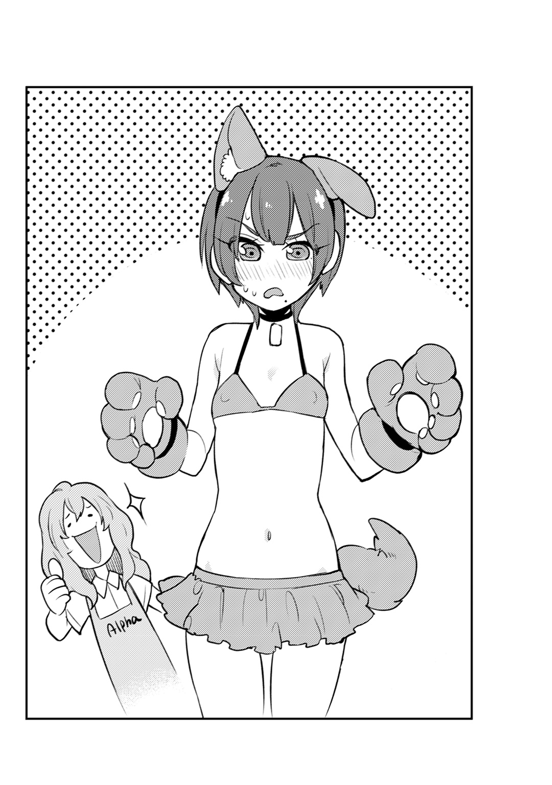

| ボクガール ボクのアルバイト | |
| 杉戸アキラ & TAMA | |
この本は縦書きでレイアウトされています。
また、ご覧になる機種により、表示の差が認められることがあります。
BOKUGIRL
ボクガール【ボクのアルバイト】 CONTENTS
この作品はフィクションです。実在の人物・団体・事件などには、いっさい関係ありません。
「あっ......！」
思いっきり変な声をあげてしまって、僕は慌てて口を塞ぐ。
横に立っているおじさんの「え？」という視線でさらに恥ずかしくなり、カバンに視線を落としてうつむいた。
さっきお尻に、誰かの湿っぽい手つきが感じられたのだ。
痴漢？
いやいや、まさかね。だって僕、男の子だし。
満員電車じゃよくあることだ。気にしすぎだよな。
ムニッ。
......ん？
ちょっと待てよ。
勘違いですまされるレベルじゃない。確かに今、つかまれた。
ムニムニッ。
ウ、ウソだろ!?
まさか本当に？
「ち、痴漢です！」
あれ？ 声が......声が出ない！
なんで？ どうして？
僕のお尻をつかむ手はとどまることなく、腰のほうにまで這いあがってきた。
「あんっ......」
シャツの中に潜りこんだその手は脇腹を撫ではじめ、変な感覚が背筋を駆け巡る。
屈辱感と羞恥心がないまぜになって、持っているカバンをギュッと抱きしめた。
「感じやすいんだな」
耳元でそっとつぶやかれ、身体がビクッと震える。不快感が全身を襲い、今度は怒りが湧いてきた。
声が出ないんだったら一発ぶんなぐって......。
「！」
だけどそこにいたのは思いもよらぬ人物だった。
「お前見てたら、興奮しちまって」
（た、猛!?）
優しい笑みを浮かべて猛は僕を後ろから抱きしめる。
しかもズボンの中にスルリと手をさし入れてくるではないか。
（え、ちょ、ちょっと！）
「やべえ。俺、はちきれそうだ」
猛の手のひらで触れられたところが、火傷しそうなくらいに熱く湿る。
ウソだ。猛がこんなことするはずがない！
猛は僕の親友なんだ！
「次の駅まで、もうちょっと楽しもうぜ」
ち、力が入らない！
（た、猛！ やめっ！ そこは！ あぁああああああああああ！）
「おい瑞樹！ おい！」
「うわぁああああああああ！」
ガバッと身体を起こすと、そこは図書館のロビーだった。
図書委員が「シーッ」と口に指を当てる。
全身は汗にまみれ、息が荒い。
どうやらウトウトして、いつの間にか寝てしまったようだ。
「なんか変な夢でも見てたのか？」
隣に座っている猛が心配そうに聞いてくる。
「な、なんでもないよ！」
「ウソつけ。すげぇうなされてたぞ」
「大丈夫だってば」
まともに猛の顔が見られない。
夢とはいえ、僕は猛とあんなことを......。
「本当、大丈夫だから！ どんな夢だったかも忘れちゃったよ」
「そんならいいけどよ」
女の子の身体になったあの瞬間、平穏だった僕――鈴白瑞樹の世界は一変した。
それはもう、青天の霹靂なんていう言葉では表せないくらいの衝撃だった。
だけど、僕にどんな悲惨なことが降りかかろうとも時計は針を刻み、カレンダーのぺージはめくられる。
神様のイタズラか突然変異かわからないけれど、少し膨らんだ胸や女子トイレの入り方に戸惑いを覚えつつも、僕はこの状況を受け止めざるを得なかった。
「男の子に戻る！」という強い意志がある一方で、自分のアイデンティティがぐらつきはじめていることを最近ひしひしと感じまくっている。
男なのか、女なのか。
「ゴールデンウィークで全然人がいないけど、おめーが残ってくれてよかったよ」
汗のにじんだＴシャツから少し浮き出る筋肉に、がっしりとした腰つき。それなのにずんぐりむっくりしていないのは、高い身長のおかげだろう。
これぞ〝漢〟と呼ぶにふさわしい身体つきだ。
「猛は家に帰らないんだね」
「帰ったってとくにやることねーもん」
彼の名前は一文字猛。僕の幼馴染で、昔から僕を普通の男として扱ってくれる唯一無二の存在だ。
僕が女の子になって、最初にその事実を知った人間でもある。
なにかと僕のことを心配してくれて、生活面や精神面でもフォローしてくれる。
猛がいてくれたからこそ、今の僕がいるのだ。
そんな猛には男として絶大な信頼を寄せていたけれど、それだけでない、なにか別の気持ちが生まれるアクシデントが発生した。
修学旅行で猛がキスをしてきたこと。後で聞いたら「友人として」って言ってくれたから安心したけど......。でも、僕の親友としてこれからも助けてくれると宣言する猛に対して、言いようのない変な感覚が走った。
その感覚につける名前を僕は知らなくて、つかみきれないモヤモヤしたものが今でも胸の中でうずまいている。
それだけならまだしも、猛の布団で僕は......僕は自分の下半身をクニクニしてしまった。男の身体なら勝手がわかるのにと思いつつ、初めて女の子の身体でアソコを触ってしまった。
ホントに、出来心だった。なんだか身体が熱くなって、きゅ～っとお腹の下あたりが熱くなって......。
「っ！」
今思い出すだけでも罪悪感と恥ずかしさが押し寄せる。
「どうした？」
そんなことは露知らず、猛はいつも通りに僕に接してくれる。
だから僕も、猛の姿を見ただけでいちいち反応するのはやめにしよう。せっかく前みたいに軽口を叩き合うような関係に戻れたんだから。
「あの～。こちらに山田様はいらっしゃいますでしょうか？」
寮に帰ると、宅配便の人が中を覗きこんでいる姿を見かけた。
「「山田？」」
猛と僕の頭の中には同じ人物が浮かびあがった。
女性の下着メーカーＲＦ株式会社の一人息子でありデザイナーの七太郎・Ｖ・山田。
自分のデザインしたパンティーとブラを自ら身につける生粋の変態だ。
下着は神聖な〝衣装〟と言ってるくらいだから、本人には羞恥心などないらしい。
「そういえばあいつ、朝起きたらもういなかったな......」
ゴールデンウィークだから、寮にずっといる必要はない。きっとどこかに遊びに行ったのだろう。
「それじゃ僕、山田の荷物を部屋に置いておくね」
「......悪いな、じゃ頼むわ」
荷物を受けとって伝票をちらりと見る。
要・運送保険、￥１，０００，０００
「!?」
ちょっと待って、なにこの金額。
「すごい高級品ってことだよね......」
緊張するなぁ。落とさないようにしないと......。
その荷物を両手でしっかりと持ち、運ぼうとしたその瞬間。
ヒュンッ――――！
「うわっ！」
黒い物体が僕の横をかすめた。
「あれ？ 荷物は!?」
「にゃ～お～」
猫だ。しかも山田の荷物を口にくわえている。
「待って！ その包み！ 預かったものなんだ！」
まんまるな図体にもかかわらず、その猫はものすごい速さで逃げていく。
「おい！ 待てってば！」
物が物だけに必死だ。
「逃がさないぞ！」
手を伸ばせばあともう少しで猫に届く。
とその時だった。
ギュルルルルル。
「のあぁ!?」
突然の腹痛が僕を襲った。腸がねじれるような感覚だ。
追いかけていた勢いで身体が前のめりになる。
「くそう、こんな時に......！」
僕の追撃から逃れた猫は荷物を口にくわえながら目の前で立ち止まっている。
そう、まるで僕を試すように。
「ぬおぉぉぉぉぉぉ！」
気持ちを奮い起こして僕は猫を追いかける。
腹痛は我慢すればどうにかなるけど、荷物は今逃したらどこへ行ってしまうかわかったもんじゃない。
「どこだ!? どこに行った!?」
見失ってしまった。
ど、どうしよう！ 大切な荷物なのに！
いやでも待てよ。ここは寮内。くまなく探せば見つかるんじゃないか？
「あれ、こんなところにトイレが」
いつの間にか別のフロアに来ていたようだった。
ギュル。
「!?」
引っこんだと思っていた腹痛がまた襲ってきた。
やばい、早くトイレに――――。
「にゃぁ」
パッと後ろを振り返ると、さっきの猫が荷物をくわえて僕を見つめていた。
「お前！」
ギュルルルルル!!
「くおっ！」
目の前にあるトイレのドアが天国への扉に見える。
ああでも、荷物！
「待てええええ！」
天国に背を向け僕は走りだす。
「にゃ～にゃにゃ～にゃ～♫」
せっかくのトイレを我慢したんだ。絶対に捕まえてやる。
「これで終わりだー！」
ギュルルルルル。
「っ！」
あともうちょっとのところで猫に腕が届かない。
「にゃにゃ～ん」
ま、また見失ってしまった。
「あ～もう！ なんでこうなるんだよ！」
怒ると下半身に刺激が加わり、さらなる腹痛が僕を襲う。
前のめりになって緩和させるも、限界がすぐそこまできていた。
「おや、君。こんなところで何を？」
「や、山田!?」
「どうしたのだね。そんなに慌てて」
「じ、実はね」
ギュルルルルルルルルル。
やばい。
さっきよりも強烈なやつだ。
「おやおや、なにやら体調がすぐれない様子。この私が誠心誠意をこめて看病してしんぜよう」
「ははっ。べつに大丈夫だ、か......ら......」
僕は額に脂汗を浮かべながら平静を装う。
「そういえば、今日私の実家から小包が届く予定なのだが知らないかな？」
「え」
「にゃ～ん」
「あ―――――！」
山田の後ろにあの黒猫。
「逃がすか！」
ギュルンギュルンギュルン。
「ふぉっ」
黒猫に向かってプルプルと腕を精一杯伸ばす。
あと一センチ、あと五ミリ！
「やった！ ついにとり返し......」
た......と思ったら、僕の手元に残っていたのは伝票の切れはしだけだった。
「ああああああああ」
「そんな、私の荷物が......」
山田が悲しみのあまり（？）服を脱ぎ捨て下着姿になる。
「本当にごめん......あと服着なよ」
見ると山田の口から魂が抜けていくのが目に見えた。目も点になっている。
「あああ！ 魂戻して！」
さすがに申しわけなく、いたたまれない気持ちになる。
「あの荷物は......私のとても大切なものが入っているのだ......」
ポツリポツリと山田が語りだす。下着姿なのは相変わらずだけれども、いつもの威厳や自信がなくなって乾涸びた雑巾のようだ。
「そ、そんなに貴重なものなの？」
哀愁感マックスで山田が言う。
「ああ。世界に一つしかないのだ。お父様から譲り受けた、それはそれは大切なものなのだ」
思い出したように僕は伝票の切れはしを見た。
￥１，０００，０００......。
背筋が瞬間冷凍されたように凍る。
「ほ、本当にごめん!!」
山田は青ざめた顔でニコリと笑いながら
「君、そんなに謝らないでくれたまえ。君にそこまで責任を感じさせてしまうなんて、私は君のフィアンセ失格だ」
優しい言葉をかけられればかけられるほど、ますます僕は罪悪感に駆られた。
「山田」
「ん？」
「僕、弁償するよ」
「ふぇ？」
拳を握りしめて僕は言った。
「バイトして、できるだけ返すから！ だから......」
「だから？」
「今はトイレに行かせて！」
一方――。
鈴白瑞樹の知らぬところでほくそ笑んでいる二つの影があった。
「ロキ様、お申しつけ通り、山田の荷物を盗んで参りました」
「ご苦労」
金髪碧眼の美少女の隣に居座るまるまると太った猫。それは瞬時にカラスに変身し、少女の肩に止まる。
「なかなか面白い展開になって参りましたね」
「ふふふ。朝あいつの牛乳に腹下しの薬を入れておいたのが、こんなに役に立つとはな」
この少女（？）の名前はロキ。瑞樹と同じクラスの転校生だ。どこからどう見ても可憐な美少女だが、瑞樹を女の子の身体にした張本人でもある。
世界樹で唯一無二のイタズラ神であるロキは下界に降りてからというものアノ手コノ手で瑞樹を困らせているのだ。
ロキの口元が悪魔の笑みのように歪む。
「さぁ瑞樹よ、この俺様を存分に楽しませてくれ！」
「今日、こちらでお世話になります鈴白瑞樹と言います。よろしくお願い致します！」
「あら～かわいい子！ よろしくね、瑞樹ちゃん」
人生で何度もくり返しているセリフを僕は吐く。
「あの、僕......男です......」
「ええ!? そうなの!? そうは見えないけど......」
彼女は心底驚いたように目を見開く。目を大きく開きすぎて、アイラインが少しはみだしていることに僕は気づく。
目の前にいるこの女性の名前はゆかりさん。ペットショップ「Alpha」の店長だ。笑った時のえくぼがキュートで、とても四十代だとは思えない。
マジマジと僕を見たゆかりさんは、僕が男の子であることに半信半疑な様子だけど、とりあえず納得したらしく笑顔をとり戻した。
「ごめんなさいね。でも助かるわ～。ちょうどバイトの子が休んじゃって。二人も来てくれるなんてホントに心強いわ」
「この私もいるのだ。大船に乗った気でいてくれていい」
僕は横にいる人間にちらりと視線を運ぶ。
「あのさ」
「ん？ どうしたね君」
「なんで山田までついてくるんだよ」
アルバイトをすると言ったものの急に働ける場所を探せるわけもなく、山田がこのペットショップを紹介してくれた。山田家がいつも利用しているらしい超高級ペットショップだ。
急遽バイトの子が必要だということで、渡りに船だった。
清潔感があってとても働きやすそうなお店なのはありがたい。
でも一緒に働くなんて聞いてないぞ！
「ふふっ。未来のワイフの働く姿をこの目に収めておきたいというのは、ハズバンドとしては当たり前のこと」
「あら、やっぱり女の子なの？」
「違います！ こいつが勝手に言ってるだけです！ 山田、誰がワイフだ！」
ここぞとばかり、山田は眉間にシワを寄せて嘆き悲しむ。
「ああ......私の荷物......」
「ゔ......」
とたんに罪悪感が僕を襲う。
「それは......悪かったと思ってるよ......」
「ならば一緒に仲よくアルバイトをエンジョイしようではないか！」
抱きしめようと大きく広げた手をかわし、僕は山田の顔面に一発食らわせる。
「僕に触るなー！」
「くはっ！」
「あらあら、仲いいのね」
ゆかりさんは顔をほころばせ、コロコロと笑う。
「違います！」
「それじゃ持ち場に案内するわね」
「あの......ゆかりさん」
「ん？」
「これ......ちょっと小さくないですか？」
支給されたこの店オリジナルの制服。ポロシャツと短パンってところは普通だけれど、問題はサイズだ。
「あの......サイズが小さいような......？」
「あら、少しくらいピチピチしてたほうがかわいいのよ」
「そういう要素いらないと思うんですけど......」
ちょっと肌に食いこみ気味の制服は動くたびに擦れて妙な感じだ。
とはいえ、人生初のアルバイト。自ずと気合が入る。
「それじゃ瑞樹君には、猫を担当してもらいましょうか」
「はい！」
それにしても......と僕は思う。
「なんか、ちょっと緊張します」
猫一匹に対してかなり広々としたショーケースがあてがわれている。血統書つきのアメリカンショートヘアやシャム猫がそこに鎮座し、ツンと澄ましながら僕の存在なんか知らないというように思い思いにおもちゃで遊んでいる。
これら一匹に、いったいどれだけの価値があるのか想像もつかない。
傷つけないように注意しなくちゃ......。
「それじゃ、猫ちゃん達のケースの中を掃除してくれるかしら」
初めての労働で、僕は緊張しつつも胸が高鳴る。学校とは違う、社会で働いている感がなんだか僕を大人にしている気がするのだ。
「さぁ、こっちにおいで」
とりあえず起きている猫のケージからとりかかることにした。寝ている猫は後回しだ。
「うわぁ～かわいい～」
フワッフワの子猫を抱きかかえて僕は胸がときめいた。まだ生後二か月らしくて、手から少しはみでるくらいの大きさだ。力を入れたら潰れてしまいそうなくらいに頼りない。
「さあ、お掃除するからね」
母性というのはこういう気持ちのことを言うのだろうか。ンニャ～と小さくあくびをする猫をそっと別の場所に移す。
まずは自分の手を消毒して、その手でケースの中の物をすべて出す。抜け毛がついていたら掃除機でキレイにして、水とエサをとり替える。汚れている砂も新しく交換して終わりだ。
「なんだ、けっこう簡単じゃん」
充実感を持って一匹目を終わらせた僕は次の猫にとりかかった。
ケースに「スフィンクス」と書かれている。
毛が一本も生えていないガリガリな猫だけど、ストイックなたたずまいが高級感を醸し出している。なるべく怯えさせないように僕はゆっくりと手を入れた。
「うわっ、痛っ！」
シャーッと音を立ててスフィンクスが僕に牙を向く。
「ご、ごめん。中を掃除しなくちゃいけないんだ」
なんとか警戒を解こうと、猫じゃらしを使っておびき寄せてみる。興味を持ってくれるかと思ったけど、何度やってもうまくいかない。
「シャシャシャ―――！」
ちょっと泣きたくなってしまう。
「なんでだよ～お願いだから大人しくしてよ」
「おや、困っているようだね君」
ふと後ろを振り返ると山田がキラリと歯を光らせてそこに立っていた。
「な、なんだよ。自分の持ち場についてろよ」
「ノンノン。君の困っている姿を見て放っておくなんて紳士である私にはできないのだよ」
紳士？ とつっこみたくなるが、いちいち気にしていたら日が暮れてしまう。
「べつにいいよ。ここは僕の持ち場なんだから」
どうせ山田がいても役に立たないに決まってる。むしろ邪魔されること必然だ。
「貸してみたまえ」
山田は無遠慮に僕の隣に来てケージの中に手を伸ばすと、エサを少し蒔いた。するとさっきまで警戒していたスフィンクスはエサにかぶりつき、カリカリと食べはじめたではないか。山田はエサを少しずつ自分の手に近いほうに置いていき、スフィンクスはエサに釣られてだんだん山田のほうへと寄ってくる。
そして近づいてきたその猫を山田は横から優しく持ちあげる。
「よしよし、そんなに私の手の中が気持ちいいかね？」
ゴロゴロと猫のノドを揉む山田はなんというか、いつもの奇行からは想像がつかない動物好きのお兄さんだった。
「私の秘技〝アノ頃のぬくもり〟にかかったね。いい子だ」
「意外かも」
「ん？」
「山田がこんなに動物を扱うのが上手だなんて。やっぱり実際に飼ってると違うんだね」
目を逸らして僕は続けた。
「まぁその......ありが......と。助かったよ」
山田がツバを飲みこむ音がはっきりと聞こえた。
「君ー！ なんだそのかわいらしい仕草は！ この私を欲情させようとしてもそうは......」
「っだー！ いい加減にしろ！」
「こら、遊んでるならお給料から差し引くわよ！」
遠くから鋭いゆかりさんの声がした。
「す、すみません......」
なんとかすべてのショーケースの掃除を終えた僕は次の指令を受けた。
「次はリクガメのお掃除をお願いできる？」
ホッとした。リクガメって言ったらあの小さくてかわいらしい亀のことだ。小学校の教室の後ろで皆のペットとして飼われることもある。猫みたいに威嚇してこないだろうし、きっと扱いやすいだろう。
水草を煮詰めたようなにおいのするエリアに僕は連れていかれた。
「さ、これお願いね」
「えええええええ!?」
思わず後ずさりしてしまうほどだった。
「で、でか......」
目の前にいるリクガメと呼ばれたものは、僕の知っているリクガメではなかった。
少なく見積もっても体長五十センチはある。
「あの、これ本当にリクガメですか？」
「そうよ。でもこれは大型のリクガメなの。正しくは〝ケヅメリクガメ〟」
「へ、へぇ......」
大きな水槽の中に鎮座する姿はまるで王様のようだ。
首は引っこんでまるで岩のように動かない。
「あ、あのぉ......」
もしかしたら寝てるのかなと思って僕はツンツンと甲羅をプッシュしてみる。
「............」
多少の刺激じゃ起きないようだ。
「ご、ごめんね。失礼します」
ドアをノックするように今度は甲羅をコンコンと叩いてみた。
するとリクガメの頭が勢いをもってにょきっと出てきた。
「うわっ」
いきなりのご挨拶でびっくりしてしまう。
リクガメはつぶらなウルウルとした瞳で僕のことをじっと見つめた。
賢者とも称される亀だけど、それよりかわいいという表現のほうがお似合いだ。
なんだかその瞳を見ていると、不思議に愛おしい気持ちがこみあげてきた。
恐る恐る、怖いものみたさでリクガメの頭に触れてみる。
一瞬ビクッと頭を少しひっこめたけど、心を開いてくれたのか僕の指先に応えるように頭をもぞもぞと動かしてくれた。
「あはっ。かわいいな～」
始めはその大きさにびっくりしたけど、なんて素直な動物なんだ。
目をパチパチと瞬かせて、リクガメは気持ちよさそうな表情を見せてくれた。
「気持ちいい？ こっちのほうはどうかな？」
太くてたくましい首を優しくさすってあげると、今度は目を閉じて眠りに落ちていくようにうっとりしはじめた。首筋のひんやりとした感触が気持ちいい。
少し水っ気があるのか、首をさするとヌルヌルして滑りがいい。
口にエサである果物を持っていくと、リクガメはパクッと食らいついてムシャムシャと食べはじめた。
ゆっくりだけれども力強い。口の中を見てみると歯がないようだ。つまりアゴの力だけで食べてるってわけだ。
「これも食べてみる？」
同じように今度は草をあげてみる。
「あはっ。そんなにいっぺんに食べるとノドに詰まっちゃうよ」
なんだか楽しくなってきた。
咀嚼したエサが長くて太いノドをつたって流れ落ちていく。その感触が首筋を撫でている僕の指にダイレクトに伝わってくる。
「そろそろ掃除を始めよっか」
首から手を離すと、リクガメはもっと撫でてほしいというように首を長くして僕の手に顔を近づけてきた。
「もっとしてほしいの？」
遊んでる場合じゃないけれど、期待には応えたい。
血管が浮き出てきそうな太い首筋を撫でてあげると、気持ちよさそうにリクガメの頭がかすかに震える。「いい子だね」と言いながら頭ももう片方の手で撫で回してあげる。
「............」
太くて、長くて、たくましい。どこかで見たことがあるような。
「」
なんだろこれ、なんか妙な気持ちになってきた......。変だな。リクガメ相手にウズウズするはずなんてないのに......。
そういえば猛と一緒にお風呂に入った時、猛のアレもこんな感じだっ......。
「ってバカ！ なんで猛が頭に浮かぶんだよ！ しかもかなりプライベートな部位を!!」
だけどそんな考えも、後ろから感じる熱火を帯びた気配によって吹き飛ぶ。
「ハァ......ハァ......ハァ......」
「!?」
後ろにはいつの間にか山田がいて、荒い息を吐きながら僕のことをギンギンな眼で見つめているではないか。
「マイハニー......それは、それはわざとなのかい？」
「え？」
「その手つきでぜひとも私の下半身をぉぉぉぉぉぉ！」
山田の下半身はほのかに盛りあがっていて、グイッと僕に男の生理現象を突きつける。
何を考えているのか一瞬で理解した僕は叫んだ。
「変なこと考えるなぁああああああああ！」
ドカッと僕は山田の下半身に蹴りをかました。
「ぬ、ぉぉぉぉ......」
言葉にならない叫びをあげながら山田がピクピクと床の上で痙攣する。
「や、やめろよな！ この変態」
僕だって、リクガメ君の頭を触りながら猛のアレを想像しちゃったけどさ！
「あらどうしたの瑞樹君？ 顔が真っ赤よ」
「！」
リクガメを洗うホースを持ってきたゆかりさんは驚いたように僕を見つめる。
「な、なんでもありません！」
「ふふっ。それじゃこれお願いね。山田君、寝ていないで早く起きて」
倒れている山田を見おろすその目は「さぼってんじゃないわよ」と言っていた。
「これも......愛情として受け止めることにしよう」
「なに言ってんのコノ子？」
「無視していいと思います」
水槽もリクガメも洗い終わった僕は、次はウサギの世話をすることになった。
「十羽いるから大変かもしれないけど頑張ってね」
ウサギは広い囲いに放し飼いにされていた。
「うわ～かわいい～！」
猫もリクガメもかわいかったけれど、うさぎのかわいさはイチオシだ。
「耳は神経が集まってるから、あまり触らないようにね」
「はい！」
そ～っと入るとウサギはぴょんぴょんと走って僕から逃げていく。
......哺乳類に嫌われる体質なのかな。
そうは言っても、何羽かは僕に興味を持って近寄ってくるものもいた。
「うわぁ、あったかいなぁ」
抱きかかえると髭のあたりをヒクヒクさせて耳をパタパタと動かす。適度に重さもあって胸がキュンキュンとしてくる。ウサギの体温は三十八℃から四十℃で、まるで上等なカイロだ。
「......ダメだ。このままじゃ掃除なんてできやしない」
僕は泣く泣くうさぎを膝からおろして掃除を始めることにした。小さいコロコロとしたフンが散乱している。乾燥しているからホウキで掃きやすい。
「さて、次は......と」
囲いの中には二、三羽のウサギが入れるような小さな小屋がいくつかあった。囲いの中で遊んでいるウサギは八羽。ということはこの小屋の中に二羽いるということだ。
小屋の中の様子を見ようと僕は身をかがめる。
「失礼しますね......」
するとなんだかよくわからないけど、中からただならぬ気配が伝わってきた。
「？」
カサカサとおがくずの摩擦音が聞こえる。音は小さいけれど、確かに僕の耳の中に入ってきた。
「起きてるんだ。よかった」
薄暗い小屋の中を見て僕は息が止まった。
「あ......」
小屋の中にいたウサギの片方がもう一羽のウサギの上に乗って小刻みに腰を揺らしているのだ。
「っ......」
衝撃映像を目の当たりにして僕は思わず息を吞む。
リズミカルに動く腰つき。それを受け止めるメスは虚ろな瞳をヒクヒクさせていた。
「これってもしかして......」
僕が覗いた二羽のうさぎは、絶賛交尾中だった。
「あわわわ......！」
プライベートを無断で覗きこんだような気がして顔が熱くなる。
でもなぜか僕はそのウサギの行為に釘づけになっていた。
その行為は一度だけでは飽き足らず、少しの休憩を挟んでは何度も何度も繰り返される。
「え!? また!? そんなにしちゃって大丈夫!?」
プレイ○ーイのマークなのも納得だ。こんなに何度もできるなんて......。
「す、すごい......」
その行為を見ていると、なぜかまた猛の顔が浮かんできた。
「な、なんで猛が......！」
きっとさっきのリクガメのせいだ。変なことを想像したから......そうに違いない！
「猛も......こんなにすごいのかな......」
ってバカバカ、なんて破廉恥なんだ僕は！
猛がこんなことするはず......。
「............」
本当にそうだろうか。お互いに秘密なんてあるはずないけど、もしかしたら僕の知らないところで猛は女の子とこういうことしてる......。
「っ......！」
な、なんでお腹のところがジンジンしてるんだよ！ それに胸のあたりがドキドキしてきた。
「どうしちゃったんだよ......僕......！」
チラっと見るとまだウサギは行為を続けている。耐えきれなくって僕は思わず目をそむけた。
まだ顔は火照っている。いったいどうしたというのだろう。
僕が気を持ち直し、小屋に敷くためのおがくずをとろうとすると――。
「え、えええ!?」
まるで小屋の中の交尾熱が伝染したかのように、小屋の外にいた他のウサギ達もせっせと交尾をしているではないか。
「な、なんでぇ!?」
右を見ても、左を見ても、前も見ても交尾交尾交尾。
♂×♀のマークが頭の中で乱舞する。
何羽もの腰の振動が僕の足下にまで伝わってくるようだ。
「あわ......あわわわ......」
逃げだしたくても金縛りにあったように身動きがとれない。
自分よりはるかに小さい生物の自然の摂理に足がすくむ。
「うううう」
結局その後僕はかわいいウサギ達のソレが終わるまで、そこから一歩も動くことができなかった。
ほわほわした頭でなんとかウサギ小屋の掃除をすませた僕は休憩を言い渡された。
初体験のオンパレードで忘れていたけど、ふと気がつけば胃は痛いほどの空腹感を訴えていた。
「午前中よりも午後のほうがお客さんたくさん来るから、しっかり食べて体力つけといてね」
そうして僕はバックヤードで一人、コンビニで買ってきたおにぎりと揚げ物を頰張るのであった。
「疲れた......働くってけっこう大変なんだな」
簡単そうだなんて高をくくっていたけど、現実はそう甘くはなかった。でも、疲れ以上に充実感のほうが大きかった。自分で言うのもなんだけど、なかなか綺麗に掃除できたほうだと思う。心をこめて掃除した甲斐があった。
それに生き物を扱う責任感が芽生えて、なんとなく人間的に成長した気がする。
「いつもよりご飯が美味しいなぁ」
何度も食べたことのあるコンビニのおにぎりなのに、なんでこんなに美味しいんだろう。
それに唐揚げも。
「私のと交換しないか」
ふと振り返ると山田がかなりの至近距離にいた。
「うわぁああ！」
睫毛が触れ合うのではないかと思うくらいの山田の迫力に、僕は椅子から転げ落ちる。
こいつ、気配消しの達人か!?
「ああ、そんな格好をして私のことを誘っているのかね？」
「え？」
椅子から転げ落ちた時の姿勢のせいで、僕はパカ～と足を開いたような格好になっていた。
「な、なんだよ......！」
「女性がそのような格好をするものではないよ君」
「っ......！ 僕は身体は女の子かもしれないけど......中身は男だ！」
ふんっと立ちあがって僕はお昼の残りを片づける。
「あ、あれ！ 僕の唐揚げは!?」
最後の楽しみのために二個残しておいたのに。
「庶民の食べ物も悪くない」
山田はもぐもぐと口を動かして何やら食べている。
「山田ー！ 貴様ー！」
休憩のはずなのにドッと疲れてしまった。
「瑞樹君、お昼終わったわよね？ 悪いけどお客さんの相手しなくちゃいけないから、犬小屋の掃除お願いできる？」
「はい！ 喜んで！」
すでにいくつかの動物小屋の掃除をクリアした僕は、自信満々で犬のエリアへと出向いていった。ワンワンと吠える声が聞こえてくる。
「はうっ！」
モコモコしていて、もはやどこまで顔かよくわからないビション・フリーゼ、シルクのようにツヤツヤした毛が魅力的なヨークシャ・テリア、体全体がモップのようなコモンドールなどが僕を迎えてくれた。
「な、なんてかわいいんだ......」
僕は口に手をあてて犬達をながめる。
「......ちょっと待てよ」
いやいやいや。よくよく考えてみると......。僕、なんだか今日キュンキュンしすぎじゃないか？
女の子の身体になる前は動物を見てもこんなにキュンキュンなんてしなかったのに。
「ダメだ......」
この調子じゃ掃除をし終える前に日が暮れちゃうよ。
「ゆかりさん、終わりました！」
「あらお疲れさま。ずいぶん遅かったわね」
「すみません......子犬達のかわいさに足を引っ張られて......」
「まぁいいわ。さてと、あとはタケルだけね」
「え？ 〝タケル〟？」
聞き慣れた名前に一瞬ドキッとする。
「ちょっと瑞樹ちゃんにチャレンジしてもらおうかしら」
ゆかりさんに連れていかれたのは、犬エリアからさらに奥にある部屋だった。そこだけ鍵がかけてあって、なにやら警備が厳重だ。
「ちょっと強面で怖いけど、すごく優しい犬だから頑張ってね」
〝頑張ってね〟という言葉に一抹の恐怖を覚える。
「タケルー、入るわよー」
「!?」
扉を開けたとたんに飛びこんできたのは、僕の想像を遥かに超える大きさと威厳を備えた生き物だった。
三秒ほど僕は全身が麻痺したみたいに動けなくなった。
「あ、あの、これって......!?」
「チベタン・マスティフ。チベット高原原産で、まだ子犬よ」
「子犬!? どこが!?」
「年齢的にはまだ若いから、子犬よね」
「いやいや違うでしょ！ これどう見たって成犬でしょ！」
「この子は食欲旺盛で、普通より大きいの。ちなみにトラに勝つこともあるほど戦闘能力が高いのよ」
「!?」
改めて目の前にいる犬を見てみる。毛並みは豊かすぎてまるでライオンのたてがみのようだ。足腰もかなりしっかりしていて、今にも襲いかかってそうな雰囲気を醸し出している。
犬の後ろからスター○ォーズの挿入曲が流れてくる。ダー○ベイダー登場のあの曲だ。そんな幻聴まで聞こえるほど、僕はビビっていた。
部屋の中にはさらに大きな鉄柵のケージがあり、タケルと呼ばれるその犬はおもちゃである人形を嚙んで遊んでいる。
「まだ一歳だから甘えたい盛りなのよね」
タケルが嚙んでいるその人形はすでにボロボロで、なんだか僕の未来を暗示しているような気がした。
「大丈夫ですか？ 襲いかかってきたりしませんか？」
「......。大丈夫よ～！」
「なんですか今の間は！」
とその時、山田が後ろから声をかけてきた。
「おおお！ これは護衛、狩猟が得意な超高級犬種ではないか！」
「あら山田君、もしかして興味がある？」
「ふふふ、愚問だよ。チベタン・マスティフといえば、その精悍な顔つきから、飼い主の威厳を誇示する。まさに私にうってつけの犬ではないか！」
「どうせなら山田君、触ってみる？」
「もちのロン！」
だがさっきまで人形で遊んでいたはずのタケルは山田が近づくやいなや、ものすごい唸り声をあげて身がまえる。
「気をつけて、山田！」
「おやおや、安心したまえ、なんてったって私は犬の扱いには定評があるのでね」
と言いながら鉄柵に手を延ばす山田。だけどあと少しで届くかという時、タケルは牙を剝いて鉄柵越しに嚙みついてきた。
「おっふう！」
あと少し近かったら山田の指が食いちぎられていたかもしれない。そう思ってしまうほど勢いがあった。
「大丈夫、山田？」
僕の心配を喜んだのか、山田はダメージを受けるどころか僕に抱きついてきた。
「ああ愛しのワイフよ。私のことを心配してくれるのだね」
「触るな―――！」
その様子を見てゆかりさんはため息をつく。
「やっぱりね。タケルは男性にはなつかないのよ」
「そうなんですか？」
「それを早く言ってくれマダム......」
そこで僕は気づく。
「あれ、だったら僕だってきっと扱えないですよ。僕、男だし」
ゆかりさんはう～んと僕をマジマジと見る。そしてこう言った。
「大丈夫じゃないかしら」
「え、なんで？」
「だって瑞樹君、女の子っぽいし」
石でガーンと殴られたようなショックだ。がっくりと肩を落としている僕をよそに、ゆかりさんはタケルのケージを開けはじめた。
「ほ～れタケル？ 大人しくしてね～」
「ちょっと！ まだ僕、心の準備が」
とか言ってるうちにタケルはケージから出てきてその巨体を揺らし、僕に突進する。
「う、うわぁああああああああ！」
ギュッと目をつぶり覚悟を決める。
次の瞬間、生温かいザラザラとした感触が頰を撫でた。べっとりした粘液が首筋を伝う。
「う、うううう」
タケルは僕に被さり、ペロペロと僕の顔を舐める。
「ほーら！ 大丈夫だったでしょ？」
「た、助けてください......」
パシャパシャ。パシャパシャ。
ん？ と上を見ると、山田が天井のフックにぶら下がりながら、カメラで僕の姿を撮影していた。
「いいぞタケル！ そのまま服を脱がしてしまいたまえ！」
「撮るな――！ ってうわぁああ！ 舐めないでよ～！」
僕の体重の倍くらいあるんじゃないだろうか。身動きがとれないほどの重さが僕を襲う。名前通りタケルは巨大だ。
「タケルはあなたのことが気に入ったようね。それじゃもうちょっと慣れてもらうために、コレあげて」
天を仰いでタケルの猛襲を受けている僕に突きつけられたのは、哺乳瓶に入った白い液体だった。
「ふふ、タケルはこれが好きなのよ」
匂いに気づいたタケルは、鼻をヒクヒクとさせながら僕から離れてゆかりさんの持っている哺乳瓶をガウッと口に含んだ。
そして美味しそうにゴクゴクとそれをノドに流していく。
「それってもしかして、ミルクですか？」
「大正解よ」
「え、犬ってミルク飲むんですか？」
「タケルはこれが大好きなのよ」
なんでもゆかりさんによると、犬の嗜好は長年与え続けるもので決まってくるらしい。
「タケルは特別ね。たぶんお母さんからなかなか乳離れできなかったんじゃないかしら」
それを聞いて僕はタケルに親近感を持った。図体はデカイけど、やっぱりまだ子供なんだ。きっとミルクを飲みながらお母さんのことを思い出してるんだろう。僕も、ふとした瞬間に亡くなったお母さんのこと思い出すことがあるから......。
「それじゃ、タケルの散歩連れてってくれる？」
「え!? 散歩!?」
バイトは店内だけの作業だと思ってたから少しびっくりした。
「女の私がこの子を引っ張れるわけないでしょ。それに店内は広いけど、ちゃんと散歩させてやらないとストレスがたまっちゃうのよ。瑞樹君が散歩に行ってる間に、ケージの掃除しておくから」
ちょっと大変そうだけど、ゆかりさんは男である僕を信頼してくれてるんだ。
「任せてください！」
「おいタケル！ そっちに行くなって！」
リードをがっちりと握る手が痛くなるほど、タケルは好き勝手な方向へと進んでなかなか僕の言うことを聞いてくれない。
ドヤ顔で散歩を引き受けたものの、出鼻をくじかれた。
タケルは興味のあるもの――たとえばヒラヒラ飛んでいる蝶とか、そこらへんに生えている雑草とか――を見つけるとそちらのほうへと行ってしまう。
リードを引っ張っても逆に僕が引っ張られる始末で、リードの意味を完全に失っていた。
「――――！」
ジュワッ～......。
引きずられないようにふんばるたびに、ピチピチの制服が、とくに短パンが股に食いこむ。
「や......なんか......アソコがくすぐったい......！」
「バウバウ！ バウバウ！」
そんな僕にはおかまいなしでタケルはどんどん歩いていく。
「あーもうダメだってそんなの口にくわえちゃ！」
明らかに食べることができないコンビニの袋や空き缶にまで興味を持ちはじめた。
タケルのような大きな犬が珍しいのか、すれ違う人々が興味深げにジロジロと見てくる。それに加えてコントのようなタケルとのやりとり。なんだかちょっと恥ずかしい。
「こら！」
と叱ると、タケルはバウ？ と不思議そうに僕を見る。荒い息づかいや口からのぞく牙がちょっと怖いけれど、何も考えてなさそうな間抜けなところに愛嬌が垣間見える。
「キャ――――――！」
「こらタケル！ スカートをくわえるな！」
でも他人様に迷惑をかけるのはやはりよくない。
女好きなのか知らないけれど、近くを通りかかった若い女性を見つけると、突進していく。
ギロリとタケルを睨んで僕は言う。
「僕の知ってる〝タケル〟は、こんなに女好きじゃないぞ！」
そんな鈴白瑞樹の様子を上空から高みの見物を決めこんで面白おかしそうに見ている人影が。
「なるほど、瑞樹がペットショップのバイトねぇ」
ロキは空飛ぶホウキにまたがって何か考えている様子である。
「なんでもあの犬はメス＆ミルク好きらしいです」
ホウキの柄に止まるカラスはちょっと胸を張って言う。なかなかの情報でしょ？ と言わんばかりに。
口元に笑みを浮かべながらロキは囁いた。
「ふふふ。いいことを思いついたぞ」
散歩をしはじめて三十分もたたないうちに、僕の体力はかなり削られていた。
「お願いだから、言うこと聞いてよ。ね？」
それでもタケルはあっちに行ったりこっちに行ったり。
お尻が地面につくほど腰を低くしてリードを引っ張っても、タケルはあらぬ方向に向かってしまう。
「あ―――もう！ 無理だよこんなの！」
僕はとうとうお尻をついてギブアップ宣言をした。
するとさっきまで自由奔放に振る舞っていたタケルがこちらをくるりと振り返り、近寄ってきた。
「な、なんだよ......」
ペロッと下からすくいあげるように僕の頰を舐める。
「タケル......」
悪いと思ったのか、タケルは僕のことをねぎらってくれているようにも感じた。
恐る恐るタケルのたてがみに触れると、タケルはスリスリと僕の手にすり寄ってくる。なんだか胸のあたりに、ほんわかした温かさが宿った。
「ごめんね。君のこと、キライなわけじゃないんだよ」
「バゥッ」
この時僕は気づかなかった。
タケルとのスキンシップに気をとられてリードを握る手がかなり緩んでいたことを。
「！」
タケルは何かを見つけたのか、僕の後ろを見つめて「バウッ！」と盛大に吠える。
吠えるというよりも、それは咆哮に近かった。キーンとした耳を押さえ、
「ど、どうしたの？」
僕が後ろを振り返ると、そこにはタケルと同じくらいの大きさの真っ黒い犬がいた。
なぜか足をあげてその犬は自分のおっぱいを見せつけてくる。何個にも連なるぷっくりと膨らんだそれは遠目でもおっぱいとわかるものだった。
「バウ！」
しまったと思った時は遅かった。緩くなったリードは僕の手をすり抜け、タケルはメス犬に向かって猛突進する。
「タケル！ 待って！」
「バウッ！ バウッバウッ!!」
黒い犬はタケルから逃げ、タケルはそれを追いかける。犬の足に人間が追いつくはずもなく、僕は早々にタケルを見失ってしまった。
「ど、どうしよう......！」
呆然と僕は道に立ちすくむ。閑静な住宅で人がおらず寒々しい。世界に一人とり残されたような気分だ。
そして自分の顔が青ざめてくるのがわかった。
「やばい......なんとかしないと」
プルルルルル――――。
携帯に着信がある。知らない番号だ。今は電話に出ている場合じゃない。
だけど一度鳴りやんでも、また鳴りだす。しかたなく僕は電話に出た。
「はい、もしもし」
『マイハニー。いったいどこにいるんだい？』
電話の向こうから山田の声が聞こえてきた。
「なんだよ。っていうか、なんで僕の電話番号知ってるんだよ！」
慌てているためかいつもより言葉尻がキツくなってしまう。
『おやおや、我が姫はご機嫌斜めのようだね。散歩の帰りが遅いので心の底から、それはもう奥底から心配をしていたのだ』
そうだ。もしかしたら......。
「山田、お願いがあるんだけど......」
こんなヤツに頼むなんて情けない。でも今は仲間になってくれそうな人は他にいない。
『なんと！ この私に頼みごととは！ なんでも言ってくれたまえ――！』
「実は......」
住宅街にある小さな公園の角で僕は山田と落ち合う。
「な、なんだよこれええ！」
「アノ犬を捕獲するための衣装だ！」
電話を通して状況を伝えた僕は山田の協力を仰ぐことにした。
『大丈夫！ この私に任せたまえ！ 素晴らしい方法がある！』
そう自信満々に言った山田の手にあるのは、ペラッペラの犬のコスプレ衣装だった。
「これを僕が......？」
犬の耳を模したカチューシャに、肉球つきミトン手袋。
そして上は茶色いビキニのようなものに、下は尻尾つきのミニスカート。
ビキニ（？）にいたってはご丁寧にも犬のおっぱいらしき突起物がついている。
「やだよこんな恥ずかしい格好！」
「なにを言っている！ これこそ完璧なる擬態ではないか」

「完璧じゃないよ！」
「犬は単純だからな、これを着て街を歩けば、向こうから来てくれるに違いない」
「単純......ねぇ......」
知らないお姉さんやメス犬に、一目散に飛びつくタケルの姿を思い出す。
「確かに......」
「それでは私は店に戻るとしよう」
「ええ!? 一緒に探してくれないの!?」
「ノンノン。いつまでも私が帰らないのでは、ゆかりさんに怪しまれてしまう」
「そりゃ......そうだよね......」
「それではコスプレをしながらタケルを見つけたまえ。アデュー」
そうして山田は行ってしまった。
僕は一人とり残される。
「ええい、こうしちゃいられない。さっさとタケルを見つけないと！」
僕は覚悟を決めてトイレで衣装を身につけ、よしっ！ と意気ごんだ。
「タケル～！ タケルどこー!?」
僕はタケルを見失った場所から、名前を呼びながら、ついでに言うと犬の格好をしながらタケルを探す。
スカートが短すぎて、内股気味になり、ふとした風にも下半身を震わせてしまう。
胴回りを肉球で隠そうとしても覆いきれない。
なんでこんなに布の面積が少ないんだよ！
「何あれ。コスプレ？」
「何かのキャンペーンじゃない？」
「あの犬っぽい子、かわいくね？」
「ワシ、あのおなごタイプやも」
夕方になって一気に住宅街を歩く人の数が増えてきた。家に帰る子供達、夕飯の買い出しに向かう主婦、日課であろう散歩をするお年寄りなどだ。
「っ」
恥ずかしい。このうえなく恥ずかしい。
「ひゃぁ！」
誰かに後ろから布をつかまれて、僕はコケそうになった。
振り向くと小さな子供が僕の尻尾をむぎゅっと握っていた。
「ママー！ ワンワンだよ～」
「こら、見ちゃダメよ」
「あの！ これはその......」
そそくさと去っていく親子を見て悲しくなったのは言うまでもない。
気を持ち直して僕はタケル探しを再開する。
ある程度時間がたってくると、通り過ぎる人からジロジロ見られるのもだんだん気にならなくなってきた。
慣れとは恐ろしいものだ。
肝心のタケルはどこを探してもいない。時間だけが過ぎ去っていく。
どうしようという不安を通り越して僕はパニックになりかけていた。
「もしかして、僕が犬っぽくないんじゃ......？」
そうだ。格好だけ犬でも、立ったままじゃ犬に見えるはずがない。
四の五の言ってはいられない。
「僕は犬......僕は犬......」
ためしに四つん這いになって道を歩いてみた。
僕はあたりを見渡しそして......。
「ワンワン！ ワンワン！」
シーン。
「............」
我にかえってバカらしいことに気づく。
頭がおかしくなったのか僕!?
なんだかすごく哀しい。
「ん？ あれは......」
向こうからやってくる人の影。
も、もしかして！
「藤原さん!?」
サッと物陰に隠れて跳ねあがった心臓を押さえる。
見間違いじゃないだろうかと思って、僕はそっともう一度確かめる。
長い髪に整った顔、クリクリの目にプルンと潤った唇。
正真正銘、僕の想い人の藤原さんだ。
な、なんでここに？
「こんな格好、藤原さんに見られたら......僕は一生の終わりだ」
『鈴白君、変態だったのね』
『ち、違うんだー！』
悪寒めいたものが身体を震わせる。
いやいや落ち着くんだ僕。
ここで下手に動くよりも、隠れて通り過ぎるのを待っているほうが得策だ。
ジッと息をひそめながら藤原さんを待っている間、僕の手のひらには変な汗がじっとりと滲んでくる。
「............」
藤原さんはやってこない。
そ～っと陰から確かめると、藤原さんは立ち止まって携帯を見ていた。
「ハルケンジャーのＤＶＤの予約、今日からだった！ すぐに予約しないと！」
なんでこのタイミング！
早く通り過ぎてほしいのに！
「あれ、ログインのパスワードなんだっけ？」
一秒が永遠に感じるくらいに長い。
とその時だった。
「ああああ！」
藤原さんの後ろの十字路で、のっそりとタケルが横ぎる姿を僕は見つけたのだ。
「いた――――――――――――！」
僕は脇目も振らずに走りだす。
と、その第一歩を踏み出した刹那、しまったという思いが全身を駆け巡った。
藤原さんが携帯を片手に目を見開く。
バッチリと目が合った。
「！」
何やら言いかけようとする藤原さんの口元。
それは明らかに、
「もしかして、鈴白君......？」
と語っていた。
だけど僕はくじけない。目の前にタケルがいるんだ。
この機を逃したらチャンスはもうないかもしれない。
肉球で顔を隠して、僕は藤原さんの横を通り過ぎる。
「痛っ！」
たとえ電柱にぶつかったってめげない。
たとえぶつかったせいで鼻がツンとしたって鉄の味がしたって、背中に好きな人の痛い視線をあびたって......！
「うわぁぁぁぁぁん」
僕は羞恥心をかなぐり捨て、タケルを追いかけた。
タケルはずっと向こうのほうにいる。
ここまで苦労したからには絶対に捕まえてやる！
「待て――――！」
だけどタケルに僕の声は届かないようだ。
焦りで呼吸が荒くなる。体力が思った以上に削られていく。
身体を前のめりにしながら僕はタケルを追いかける。
「待って......まっ......まっ......て......」
目線がタケルのほうに向いていたから気づかなかった。
「うわぁああ！」
――ドンッ！
「い、たたたた......」
「君、大丈夫かい？」
「こちらこそすみません！ ってなんだこれー!?」
衣装にこれでもかというほどの牛乳が染みこみ、甘臭い匂いがただよう。
そう、ぶつかったのは牛乳配達のおじさんだったのだ。
衝撃で積んでいた牛乳瓶が散乱してしまった。
「うわっ......ベトベトする......」
肌に伝わってくる生温かい感触が気持ち悪い。
「あーあー、全部ダメにしちまった......」
「ごめんなさいおじさん、これは後で弁償しますから！ ちょっと今急いでて......」
「ウワンワンワン！」
「！」
ドドドドという地響きとともに、こちらへやってくるのは――――。
「タケル！」
ようやく僕の思いが届いたのだろうか。
「うわああ！ ありゃライオンか!?」
牛乳配達のおじさんは盛大な勘違いをして逃げだす。
「あの、大丈夫ですから......ってうわあぁああああ！」
タケルの全速力×体重がストレートに僕を直撃した。
「ごふっ」
タケルは僕の上に乗ってペロペロと衣装を舐めはじめる。
「な、なにやってんだよタケル......！」
ゆかりさんの声が頭をよぎる。
『タケルはね、ミルクが大好物なのよ』
「タケルったら......あっ......」
タケルは牛乳の染みこんだ布だけじゃ飽き足らず、僕の首筋にまでその舌を這わせてくる。
「あふっ......！」
ゾクッとした刺激が背中を走り、僕は腰を浮かせてムズムズする変な感じから逃げようとするけどタケルのせいで身動きがとれない。
ザラザラした舌が所かまわず身体を舐める。
「やぁ！ やめ......あっ！」
でもタケルはそんな僕におかまいなしでぺろぺろと舐め続ける。
「バ、バカ！ タケル！ やめろってば！」
ジタバタと抵抗するせいで、だんだんと犬の衣装がはだけてきた。
スカートがめくれあがり、犬の耳はずり落ち、これ以上やられたら大変なことになってしまう。
「あんっ！」
犬のおっぱいつきのビキニ（？）をパクッとくわえられ、チューチューと布ごと吸われた。
「あぁ！ だ、ダメぇ！ そんなとこ......！」
自分の一部じゃないのに、なぜだか変な感覚が襲ってきて股間がむずがゆくなる。
ペロペロペロペロペロペロ。
抵抗するも身体に力が入らない。
タケルはおっぱいだけでは飽き足らないのか、僕の股間にまで頭をもぐりこませてきた。
牛乳がびっちょりと染みこんだ下着に吸い寄せられるように......。
「―――！」
あらぬところにタケルの舌がすべりこむ。
「そんな......それ以上されたら僕......あぁぁぁぁ！」
パシャパシャ。パシャパシャ。
シャッターをきる音が聞こえて僕は視線をあげる。
するとそこには、カメラのレンズをこちらに向けている山田の姿があった。
「や、山田！」
「ああ、なんていう麗しい姿なのだ。わが愛しのワイフが大型犬に襲われてあられもない声をあげているなんて......」
「お前、店に帰ったんじゃないのかよ！」
「陰からこっそりと見守っていたのだ」
「見守ってないで助けろよ！」
そう言っている間にもタケルはペロペロをやめようとはしない。両手でタケルをどけようとしても、まったくといっていいほど動かないのだ。
「お、お願いだよタケル！ やめて......あんっ！」
パシャパシャ、パシャパシャ。
「山田！ お願いだから助け......あっ、ふっ......んっ！」
「その声、もっともっと聞かせてくれたまえ！」
その時だった。
「おめえは変態かぁああああ！」
「はぅっ！」
気がつけば山田はピクピクと息も絶え絶えに道に転がっていた。
「猛！」
スーパーのビニール袋を持った猛がそこにいた。
「瑞樹お前......何やってんだ？」
「えっと......その......」
不審者を見るような猛の視線で、自分がどういう格好なのかを思い出す。
犬のコスプレ。牛乳まみれ。スカートははだけ、きわめつけは、犬に乗っかられているという......。
「あ、あのこれには......わけが......」
タケルがお腹をペロッと舐めてきた。
「あぁん！」
「！」
「タケル、ダメだよ......くすぐったいよ......！ あ、タケルっていうのはね、この犬の名前で、猛と同じ名前......ってあぁ！ タケル、やめてってば！」
「............」
「そんなふうにしたら......僕、おかしくなっちゃうよ！ あぁ！」
ペロペロペロペロペロペロ。
「見ないで！ 見ないでぇ！」
「............」
涙目になりながらイヤイヤと首をふる。
「あっん......！ た......けるぅ......！」
「！ お、おい犬っころ！ 邪魔だ、どけ」
「ほらよ。ちゃんとリード握ってろ」
「あ、ありがとう......」
タケルは男には敵意むき出しのはずなのになぜか大人しく、猛には襲いかからなかった。
同じ名前だからだろうか......。
「............」
「？」
猛が僕の口元を見ているもんだから、僕はグイッと猛に顔を近づけて聞いてみる。
「僕の顔に何かついてるの？」
一瞬目が合うも、猛はまた目をそらす。
「！ お前さ......白いの、まだ口元に......」
「え？」
そういえば口元に水っぽいものがついてる感じがした。
「あ、これ牛乳なんだ。肌も濡れちゃってるし......舐めたら不味そうだし......」
「！」
「猛、ふいてくれない？」
少し口を開いて猛がふきやすいような体勢をとる。
「っ......！」
「あれ猛、顔が赤いよ。熱？」
「すまん、俺買い物の途中だったんだ！ じゃあな！」
そう言うと猛は、土煙をあげて走り去ってしまった。
「どうしたんだろ......」
タケルと僕は同時に首をかしげた。
「なに、その格好？」
「いろいろ事情があって......」
「散歩、ずいぶん長かったわね～」
「いろいろ......事情があって......」
「まぁいいわ。もうお店閉めるから、これ、お給料。今日はありがとうね」
「！」
お給料という言葉で一気にテンションがあがる。
「ありがとうございます！」
本当に大変な一日だったけれど、茶色の封筒をもらった瞬間、それはすべてが報われた瞬間だった。
「タケル！ やったぁ！」
「バウッ！」
すぐにでも中身を見たい衝動に駆られたけれどやめておいた。寮に帰ってからゆっくりと開封の儀式をするんだ。何を買おうかなと胸がワクワクする。その三秒後に何で僕がバイトを始めたのか思い出す。
「山田に渡さないとな......」
そもそも山田の大切な小包を弁償するためにしているんじゃないか。
でも......。
やっぱり嬉しい。身体を張って、僕が稼いだお金だ。
「それじゃあね、タケル」
く～んと悲しそうな声をあげてタケルが泣いている。せつなさがこみあげてきた。
「また来るから。じゃあね」
ようやく帰ろうとしたその時だった。
「あ―――！ 君！ やっと見つけたよ！」
「？」
どこかで見た顔だ。
「牛乳代！」
「！」
牛乳屋のおじさんが去っていく。
こみあげてくる涙を僕はグッと我慢した。
ゆかりさんが不思議そうに聞いてくる。
「なんでお給料渡しちゃったの？」
「......いろいろ事情があって」
「アオン！」
タケルが僕の代わりに、空に向かって吠えてくれた。
なぜだか夜空に浮かぶ月が笑っているように見えた。
「おい瑞樹」
図書館で調べ物をしていると、後ろから声をかけられた。
「猛......」
ちょっとぎこちない、でも心配そうな表情だ。
「あのさ、この前のことなんだけどよう......」
この前のこと、そうそれは僕が犬のコスプレなんかして町を徘徊していた時のことだ。
「あれ、なんかあったのか？」
「！」
思い出して僕は顔を赤くする。
あんな恥ずかしい格好、思い出すだけでもゾッとする。
「えっと......あれは......」
やっぱり話したほうがいいのだろうか。山田の荷物を猫にとられてしまい、バイトをして返済しようと思っていることを......。
「なんかあるんだったら相談乗るぜ？」
ああ、猛はいつも優しい。氷が溶けるような安心感が広がる。
「じ、実はね......」
僕が口を開きかけた時、
「おはよう二人とも」
芳しい香りとともにやってきたのは藤原さんだった。僕は弾けたように顔をあげた。
思わず見惚れてしまうほど可憐な藤原さんに言葉を失う。それと同時に、とんでもない姿をこの前見られたことを思い出した。
いや、顔を隠してたしバレてないかも......。
「この前、鈴白君、犬の格好してなかった？」
バレていた。
「藤原も見たのか。実は俺も見て、どうしてあんな格好してたのか聞いていたところなんだ」
二人の視線を一身に浴びる。
「実はその......」
ごくりと僕はツバを飲みこむ。
「社会勉強のためにバイトしてたんだ」
「お前が!?」
「バイト!?」
二人の驚いた顔を前に、僕はついつい得意そうな調子で話し続ける。
ウソをつくなんてダメだと思ったけど、僕の口はお喋りをやめない。
「やっぱり学校だけじゃなくて、外の世界も見てみたいと思ってさ」
感心したように猛が言う。
「なんだそうだったのか」
すごいすごいというように藤原さんが身を乗り出す。
「あれでしょ？ 着ぐるみ着てティッシュとか配るバイトでしょ？」
「う、うん。そんな感じ」
「そういう理由だったらべつに逃げださなくてもよかったのに」
「やっぱりちょっと恥ずかしくて......」
猛が笑いながら横から入る。
「けっこう似合ってたしな」
「はぁ？」
似合うだなんて言われて嬉しいはずがない。猛を睨むと、猛はすまんすまんと頭をかきながら言った。
「あ、いやその。なんか動物っぽくてよ。お前のキャラに合ってるっていうか」
「なんだと！ 適当なこと言うなよな！」
なんなんだよ。似合うだなんて。あんなのが似合ってるなんてちっとも嬉しくないよ。
似合ってるだなんて......似合ってるだなんて......。
「鈴白君、なにニヤニヤしてるの？」
「！ い、いやその......」
「それにしてもえらいな。稼いだらなんかおごってくれよ」
稼いだのは全部山田に渡すつもりだけど......。
「いいよ！ ステーキでもお寿司でもなんでもこいだよ！」
「さっすが瑞樹！ 男らしいぜ」
〝男らしい〟というワードにさらに僕は得意気になる。
「本当にえらいね鈴白君。私も見習わないと......」
「えへへへ」
ああ、ウソをついている罪悪感よりも快感のほうが勝ってしまう。
いつも猛を見ている藤原さんの関心を独り占めしているなんて......。
神様もこれくらいのウソは許してくれるよね。
「でもいきなりバイトなんて、何かきっかけでもあったの？」
「え」
藤原さんが興味深そうに僕の顔をのぞきこんでくる。
「べつに、なんとなく、かな」
「なんか大人って感じ！ 尊敬しちゃう！」
尊敬！ 藤原さんが僕を尊敬してるだなんて！
頭の中にひまわりの花が咲き乱れる。
「あ、いけない。ロキちゃんと約束してるんだった。それじゃあね～」
そうして藤原さんは行ってしまった。
なんだかふわふわした幸せな気分だ。
「で、次はなんのコスプレするんだよ」
「あれは一日だけのバイトなんだ。だから今、次何にしようか決めかねてて......」
「ふーん」
「できれば日給がよくて楽しいのがいいな。......なんて、そんな都合いいのないか」
猛は少し考えたあと、何かを思い出したようにポンッと手を打つ。
「そういえば俺、なかなかコレがいいバイト知ってるぜ」
猛が指で親指と人指し指を合わせて円を作る。
「え？」
次の日連れていかれた場所は都心にほど近い、とある遊園地だった。
ちなみに今は朝の七時で、まだうっすらと霧めいたものが漂っている。
「ヒーローショーだなんて、僕、演技なんてやったことないよ」
「大丈夫だって。子供は演技を見にきてるんじゃねえ。ヒーローを見にきてるんだからよ」
「でもぉ......」
「俺だってやるんだ。演技が下手なのはお前だけじゃねーよ」
「しかも今日、ぶっつけ本番なんでしょ？」
「大丈夫だって。あんまり気負うなよな」
「......猛はいいよな」
「え？」
「身体だって男らしいから、きっと衣装を着てもすごい似合うだろうし」
慌てたように猛は弁解する。
「なに言ってんだよ。お前だって合気道で鍛えた肉体があるだろ？」
「合気道やってもこんな細いから困ってんじゃないか」
猛は僕の頭をくしゃっと撫でる。
「ま、何かあっても俺がついてるからよ、安心しろ」
「......うん」
そうだ。今日は猛がいるんだ。
そう考えると今度は腹の底からワクワクする気持ちがこみあげてきた。
「......うん！ 猛と一緒で僕嬉しいよ」
笑顔で猛にそう言うと、なぜか猛はそっぽを向く。
「べつに、そんな喜ぶほどのことじゃねーだろ」
「え、なぁに？」
「な、なんでもねぇよ」
そうして僕達は霧の中、遊園地の裏門をくぐっていった。
遊園地の道に生い茂るたくましい杉の木の上にロキはいた。
双眼鏡で瑞樹をのぞきながらふむふむと唸る。
「あいつ、今度はヒーローショーのバイトか」
木に止まっているカラスの表情は変わらない。
「おやおやロキ様。その顔はまた何か企んでいるという感じですね」
「ふっ。当たり前だろ。この俺がこんないいチャンスを逃すと思うか」
ニヤリと笑ってロキは言う。
「さてと。今回も楽しませてもらおうか。瑞樹」
僕達は遊園地のスタッフだけが入れる建物に入っていった。ここで面接をするらしい。
廊下のいたるところにショーで使われているのだろう小道具が、無造作に置かれている。
人形の首がゴロンと転がってるのには一瞬ドキッとした。
コンコンと扉をノックすると中から「どうぞ」という声が聞こえたので、僕はドアを開ける。
「失礼します。面接に来た鈴白です」
「一文字です」
中ではお兄さんが僕達に背を向けた形で仕事をしていた。
「ああ、電話くれた子達ね。いやぁ急にキャストの子がやめちゃって困ってたところだったん......だ!?」
お兄さんが僕を見ると同時に、ものすごく驚いた声をあげた。
僕はその様子に首をかしげる。
「......どうしましたか？」
お兄さんは僕をマジマジと見て、ツバをごくりと飲みこんだ。......ような気がした。
「いやごめんね。なんでもないよ。今日のヒーローショーでレッドを担当する宮下だ。よろしく」
そう言って宮下さんはたくましい腕を差し出す。
フランクな人だなと思ってその手をとると、宮下さんの手のひらの温かさが伝わってきた。ついでにちょっとだけ汗ばんでいるのも伝わってきた。
緊張してるのかな。そんなわけないよね。
「よろしくお願いします！」
「うん、よろしくね」
宮下さんの顔がゆるむ。なんだか仲よくなれそうな気がする。
聞けば宮下さんはショー歴が長く、身体を鍛えているせいか上半身は逆三角形にひきしまっていてかっこいい。ついでにニコリと微笑むと、白い歯がキラリと光ってとても爽やかだ。
猛と並んでも男らしさという点で、いい勝負だなと思った。
「ヒーローショーって知ってると思うけど、セリフはナレーションで流れるから安心して動きだけに集中してくれるといいよ」
「はい！」
僕はここにきて相当ワクワクしていた。
『あのヤングレンジャー、超かっこよくね？』
『あんな動き初めて見たー！』
『ねえママ、ヤングレンジャーのおもちゃ買って』
思わず妄想してにやける。
猛に「気持ち悪いぞお前」と言われるまでしばしそれは続いた。
「で、配役なんだけど......」
担当ヒーローの衣装を渡される。
「な、なんですかこれ!!」
ピンクだった。
まごうことなきピンクだった。
ちなみに猛は青だ。
「なんで猛が青で僕がピンクなんですか！ ピンクって、女の子じゃないんですか？」
すまんすまんというように、宮下さんは頭をぽりぽりと搔きながら弁解する。
「いやぁ、今その色しかなくてさ......。どっちかにピンクをやってもらわないと困るんだ。そうなると一文字君にピンクはミスマッチだろ？」
「う......」
確かに、猛がピンクだなんてもはやヒーローショーじゃなくてお笑いショーだ。
「確かにそうですけど......猛もなんとか言ってよ！」
「いや、バイトだしそんな意見するとかできねえよ......」
確かにその通りだ。僕のワガママでどうこうなるものではない。
なぜか宮下さんは満足げな表情を浮かべる。
「ま、今日だけなんだからさ。よろしく頼むよ」
極めつけにウインクまでされる。
そう言われるとこちらも強く出ることはできない。
しぶしぶ僕はうなずく。
「......わかりました」
「ちなみに生足だから」
「ええ!?」
今、当たり前のようにサラッと言われたぞ！
「そういうキャラなんだよ」
「うう......」
猛に救いの視線を送るが、「俺にどうしろと」とその目は言う。
こうして僕のかっこいいヒーローを演じる夢は、はかなくも散っていった。
猛と隣同士のロッカーを開けて、僕は着替えはじめる。
衣装は上と下がつながっていて、スカートはプリーツ状でヒラヒラしている。
「かわいい......」
ハッとして僕は我に返る。何がかわいいだ。喜ぶようなことじゃないだろ。
宮下さんからは「浮いて見えるといけないから、中にタンクトップは着ないでね」と言われている。
猛を見ると、猛はさっさと上を全部脱いで、衣装に着替えるところだった。
何度も見ているはずなのに、猛の引き締まった身体にポ～ッとなる。
「なんだよ瑞樹」
「え、な、なんでもない......」
いいな猛は。あんなに筋肉ついてて、動かすたびに筋肉の形が浮き彫りになるなんて。
「あのさ猛」
「ん？」
「衣装から浮き出ちゃうから何も着ちゃダメっていうことはさ......」
僕は擦れ防止用に乳首に貼ってある絆創膏を指差す。
「これも剝がさないとってことだよね」
「！」
「なんで猛が赤くなってんだよ」
「き、気のせいだ」
猛はそっぽを向いて僕に言う。
「やっぱり、外したほうがいいんじゃねえか？」
「そうだよね......」
そう言われてぺりぺりっと僕は絆創膏を外す。
「んっ......」
「............」
絆創膏の下に隠れていた乳首は、少しふやけてフニフニしていた。外し終わって今度は衣装に腕を通す。
「なんか......きつい......」
動くたびにキュキュッと音がする。
苦戦したけれど、身体をよじってどうにかヤングピンクの衣装に着替え終えた。
「なぁに猛？」
「え、いやその......スカート短すぎね？」
「え」
言われて自分の太ももを確認する。
膝上三十センチくらいの短さで、ちらっとトランクスが見えた。
「うわっ。モロ見えじゃん！」
いつも銭湯に行くとき着ているワンピースはこんなに短くない。露出面積が多いぶん、僕はいたたまれなくなる。
「トランクスが見えるのはさすがにダメだよね......」
「見せパンがあっただろ？ あれ履くんじゃないか？」
「パ、パンツ!?」
僕はイヤイヤと首をふる。
「確かに渡されたけど......。イヤだよ女の子のパンツなんて履くの！ それじゃ変態じゃないか！」
「でもだからってトランクス全開なのはまずいだろ」
「そりゃそうだけど......」
「それともノーパンでいくか？」
「絶対イヤだよ！ 他にいい方法がないか一緒に考えてよ！」
応急処置としてトランクスの裾を折ってみたり、スカートを無理やり引っ張って長さを出してみたりした。
だがどうしてもトランクスは見えてしまう。
「見せパン履くしかねーな......」
「そんな！」
遠くから宮下さんの声が聞こえる。
「まだ準備できてないかな？」
「す、すみません！」
ちらりと猛を見る。猛はツーと汗をたらして言った。
「見せパンだな」
「そんなぁ」
着替えが終わって宮下さんのいる事務所に行くと、宮下さんは一瞬僕の姿を見て固まった。
男の子がスカートを履いているんだ。そりゃ固まるよね。
「やっぱり......気持ち悪いですか......？」
かぶりを振って宮下さんは言う。
「いやいや！ 全然似合ってるよ！ すごくかわいい！」
「それはそれでどうかと......」
もぞもぞと太ももを擦り合わせる。さっきからなんだかとても落ち着かない。
なんてったって、女の子のパンツだ。すごくぴっちりしていて......。食いこみが半端ないのだ。
当たりどころが悪いと、その......変なところに刺激がいってお腹の下のほうがキューッとなってしまう。
それに通気性が抜群に悪いので肌に布がはりつく。ヒーロー用のマスクを頭からかぶっているぶん、表情が見えないのはありがたいけど。
猛を見るとやはり肌にはりついて不快なのか、腕や腰のあたりをぽりぽりと搔いていた。
「で、俺達は何をすればいいんですか？」
「え、あ！ ごめんね。そうだね。今から大体の立ち回りを教えるよ。あとは流れるセリフに合わせて適当にリアクションとってくれればいいから」
そうして僕達は宮下さんに動きのポイントを教えてもらうことになった。
宮下さんはすごく親切で、過保護とも言えるくらい丁寧に手とり足とり教えてくれた。
その間にも布の食いこみは止まることがなく、僕は思わず変な声をあげてよろけてしまう。
「あふぅ......！」
「どうしたんだい瑞樹君!?」
「だ、大丈夫です......」
「何かあったら大変だ。念のために医務室に行くかい？」
「うわ！ ちょっと！」
僕を抱きかかえる宮下さんの心臓音が伝わってくる。
その鼓動はバクバクと激しくて、医務室に行ったほうがいいのは宮下さんのほうなんじゃないかと思った。
「いえ、本当に大丈夫なんで......」
そんな様子を見て猛は慌てたように言った。
「すんません。早く次のパート教えてもらえませんか！」
こんな調子で予行練習は終わり、本番まであと三分。緊張しながら僕は思う。
「せめてこの締めつけ、少しは緩くならないかな......」
普通に動いているだけで刺激が強く、この状態で十五分も動き続けるのは辛い。
「ううう～。なんか、じんわりしてきた......」
するとどうだろう。天に願いが届いたのか、
「あれ？ 急に......」
腰回りが緩くなる。
そのおかげで妙な場所に布が当たることはなくなった。
「ゴムが伸びたのかな。あーよかった」
だけど問題はここからだった。緩みすぎて今度はパンツがずり落ちそうになってきたのだ。
「あわわわわわわ」
もうすぐ本番なのに、これは困ったぞ！
舞台の袖で待機をしながら僕は猛の腕をツンツンとつつく。
「あの、猛......」
「お、どうした？」
僕は猛にこっそりと耳打ちする。
「その......パンツが......」
「え？」
もぞもぞと腰を動かしながら僕は訴える。
「ちょっと落ちそうなんだ......ゴムが切れたのかも......」
ゲッという顔をして猛が慌てる。
「んなこと言われても、もう始まるぞ？」
「でもぉ......」
『それでは登場してもらいましょう。ヒーロー達に拍手！』
パチパチパチパチパチパチ！
「とりあえずいくぞ。大丈夫、あんまり派手に動かなけりゃ落ちることもねーだろ」
「う、うん......」
青空の下、扇状に広がる客席に、子供や大人がひしめき合っている。
「うわぁママ！ すごいよヒーローだ！」
「かっこいい～！」
「あのピンクのお姉さん、かわいい～！」
その声で気持ちと太ももが引き締まる。
パンツの緩みがなんだ。子供達が楽しみにしているんだぞ。
その子達の期待を裏切っては、絶対にいけない！
横一列になって僕達はならぶ。
『ヤングレンジャー、レッド!!』
『ブルー!!』
『ピンクー!!』
『『『参上 』』』
』』』
わっ！ と会場が湧きあがる。
なんだかちょっと気持ちいい。
そこへ会場の後ろから、敵役のキャラが登場する。
『わっはっは、出たなヤングレンジャー。今日こそは決着をつけてやるぞ』
『出たな怪人ドロスケ！ 覚悟しろ！』
怪人は全身が硬い甲羅に包まれていて、目は赤く光りいかにも悪役といった感じだ。
『おやおや、今日は美味しそうな子供達がいっぱいいるな。一人ずつ食ってやろう！』
その言葉に子供達が、ギャーッ！ と悲鳴をあげる。
『そんなことはさせるか！ ブルー！ ピンク！ いくぞ！』
『『おう！』』
『手下ども！ やってしまえ！』
するとどこからともなく、怪人の手下っぽいヤツらがわんさか出てきて客席の子供達に襲いかかった。襲うって言ってももちろん本当に襲うんじゃなくて、フリだけだけど。
僕達三人はバラバラにわかれて手下どもをやっつける。
『てや！ とう！』
軽く手や肘を当てるだけでも手下どもの役の人はものすごく痛がるフリをしてくれる。
おかげで本当に強くなったと勘違いさせてくれるほどだ。
「ヤングピンク、ありがとう！」
五、六歳くらいの男の子が僕に無垢な笑顔を向けてお礼を言ってくれるのを見ると、僕も自然とマスクの下で笑顔になる。
でも......。
（ううう。パンツが落ちてくるよぉ......）
本当はもっと派手な動きにしたほうがいいのかもしれないけど、パンツが気になって動きが小さくなってしまう。
そんなことをしているうちに手下どもがどんどん僕の周りに集まってきた。
『おっとヤングピンク、周りを敵で囲まれた！ どうするヤングピンク!?』
っていうかこんな設定、台本にあったっけ？
なぜだか手下どもの息遣いは荒い。
「どうしよう......！」
キエー！ と奇声をあげて手下が襲ってくる。
もうダメだ！ と思って目をギュッとつぶると......。
ボコッ！ ドスッ！
（！）
目の前にブルーがやってきて、手下どもを蹴散らしてくれた。
「猛！」
猛がコクリと小さくうなずく。
『これは絶妙なタイミング！ 繰り出すブルーの攻撃に手下どもも恐れをなしているようだ！』
猛と手下どもの戦いに子供達の視線が集中している間、僕はパンツをキュッと引きあげる。
「猛、ありがとう」
「おうっ！」
みごと、僕と猛の連携プレーであたりの敵を一掃することができた。
まぁほとんど猛が僕を守るような形で退治してくれたんだけど。
その頃レッドは何をしていたかというと......。
『ふははは、レッドめ。この借りはいつか返させてもらうぞ！』
『いつでも相手になってやる！』
いつの間にかレッドは怪人ドロスケと戦って、いつの間にか勝っていたらしい。
この戦いが終わったら次のシーンが待っていた。
そそくさと僕達は舞台の上に戻らなければいけなかった。
舞台の上でレッドが落ちているクマの人形を拾う。
『なんだこれは？ ふん。人形遊びなんて今時やってるヤツなんていない』
ブルーが言う。
『それより、新しいゲームが手に入ったんだ。みんなでやろうぜ！』
そして僕のセリフだ。
『そうね。私ゲームだ～いすき！』
そして舞台の袖にはけていく。
舞台袖で僕達は小休止をとる。
「猛、さっきはありがとう。おかげで助かったよ」
「なぁに、お安い御用だぜ」
そこへ宮下さんもやってきて、
「二人とも初めてにしてはなかなかよかったよ。でも......」
チラッと僕のほうを見て宮下さんが言う。
「瑞樹君、もうちょっとオーバーアクションにできないかな」
「あ......すみません......」
「難しい体技をしろって言ってるんじゃないんだ。ただもう少しだけ大げさに動いてくれると子供達が喜ぶからさ」
「はい......」
パンツのことを言うなら今しかない。でもそんなこと、今日会ったばかりの人に打ち明けるのはためらわれた。
「でも、悪くはないよ。ヤングピンクのかわいらしさも出てたし」
「本当ですか？」
「この調子で頑張ってね」
そう言って宮下さんは僕の肩をグッと握る。力強い握力を感じた。
「はい！」
なぜか宮下さんの腕が僕から離れない。
「それにしても華奢だね」
肩から筋肉や骨を確かめるように、宮下さんは僕の身体を撫で続ける。
「うっ......」
その瞳の奥になにやら違和感を覚える。
「この後も頑張ります」
まさか......ねと思いながら僕は宮下さんの手を優しく振り払った。
一方、舞台の上で何が起こっているかというと、レッドに捨てられた人形が魂を宿し、『この僕を捨てるなんて』という恨みで悪者に変貌してしまう。それを見た先ほどの怪人ドロスケがそのクマを新たな配下にするという筋書きだ。
「あの、宮下さん。次はヒーロー体操ですよね」
「うんそうだよ」
「俺達、そのヒーロー体操っていうの教えてもらってないんですけど......」
ケラケラ笑いながら宮下さんが言う。
「あーあー大丈夫！ 僕のマネしてくれればいいから！」
僕と猛はホッと胸を撫でおろす。
拍手とともに、再び僕達三人は舞台の上に躍り出る。
『いや～いい朝だ。今日も平和な一日が続きますように』
『朝といえば、あれをやんなきゃ始まらねー！』
猛がガッツポーズをとる。
意外に猛はノリノリだ。
『それじゃみんなでやってみよう！ ヒーロー体操！』
軽快な音楽が流れてきた。
きっとラジオ体操みたいなもんだろうな。
......と思っていたらそれはとんでもない間違いだった。
『はいそれじゃぁジャンプしながら大きく手と足を広げて！』
ジャンプしながら手を広げるって、けっこう難しい。
僕は言われた通りに宮下さんのマネをする。
するとジャンプと手と足を広げるタイミングで下から風が舞いあがり、僕の下半身を撫であげた。
「ひゃぁ......！」
もう少しでパンツが見えそうになり僕は手足をしまいこむ。
着地の衝撃で、パンツがまたもやずりさがってくるのだ。
『はい今度は腰に手をあてて大きくのけぞって』
やっと終わったと思ったら更なる危機が訪れる。
前屈はまだしも、後ろに反り返る時にパンツが客席に見えそうになるのだ。
本気で後ろに反り返ることができずに、僕は気にしながらも視線は前のほうを向いてしまう。
すると完全に反り返っている宮下さんとバッチリ目が合った。
（！）
（やばい、見られた？）
思わず股のあたりを手で押さえる。
（いやいや、目が合っただけでパンツ見られたとは限らないじゃないか。それより仕事に集中しろ、僕！）
ヒーロー体操が終わってすぐにまたショーに入る。
ジャジャーンという音とともに、再び悪の集団がやってきた。あの手下どもだ。
『いくぞ！ ピンク！ ブルー！』
緩んだパンツがどうしても気になる。
こんな中途半端な気持ちじゃ、宮下さんや子供達に申しわけないよ！
「ヤングピンクー！ 頑張ってー！」
（！）
その声援に、僕はさっきまでしょげていた気持ちを奮い立たせた。
そうだ、この子達は、ヒーローが見たいんだ！
今度はもっとかっこよく戦わないと！
『おっとヤングピンクやる気満々だ！ さっきのリベンジかー!?』
手下どもも気合い十分に僕に立ち向かってきた。
『ていやぁ！ とう！』
僕は次々と手下どもをなぎはらう。
『出たー！ ヤングピンクの足蹴り！ スカートからのぞく太ももがセクシーだ！』
およそ子供向けとは思えない実況中継が流れる。
「おおお～」
と観客がどよめき、僕はますます調子に乗って敵をやっつける。
「ヤングピンク！ こっち向いて！」
観客の子供がカメラを手にそう言うもんだから、僕は思わずポーズをとった。
その時だった。
「うわぁ！」
手下どもの一人が僕を押し倒し、上に乗っかってきたのだ。
「ちょっと、やりすぎじゃない？」
だけどその手下からは「はぁ、はぁ」と荒い息遣いが聞こえるばかりで、僕の声は届いていないようだった。
「ちょ、動けないからどいてよ！」
「ハァハァ......」
「ちょっとぉ！」
「ハァハァハァハァ......」
ゾワッとした感覚が襲ってくる。
その手下の手が僕の太ももを撫でてきたのだ。
（！）
ここまでやられて黙っていられるわけがなかった。
「いい加減にしろー！」
僕は得意の合気道の技を使ってその手下を投げ飛ばす。
ビリビリビリビリ！
投げ飛ばした勢いで、僕の脇腹の布が裂けてしまった。
「や、やばい！」
『きたー！ ヤングピンクの投げ技～！ そして嬉しいハプニングー！』
「おおお！」
子供達の黄色い歓声よりも野太いどよめき声がこだまする。
「あああ、どうしよう！」
『キエー！』
そうしている間にも新たな敵がやってくる。
「くそう、こうなったら！」
『おっとここで繰り出されるのは逆エビ固めだー！』
またもや拍手喝采。
「なんか僕、輝いてる!?」
「うへへへ......」
なぜか僕に組み敷かれている手下は口元が緩んでいて、至福の笑みを浮かべていた。
「うわっ。気持ち悪っ！」
「瑞樹君になんてことをー！」
走ってきた宮下さんの助太刀も加わり、背を合わせるようにして僕達は敵を迎え討つ。
「あの、もうちょっと離れてないと危なくないですか？」
「いやいや、またもし君に何かあったら大変じゃないか」
そうしてまたやってきた敵を僕は倒す。
手下どもが二人がかりで僕をはさみこんできた！
破れた衣装はさらに裂け、スカートがめくれて今にもパンツが見えそうだ。
助けにきてくれたはずの宮下さんはその様子を凝視している。
「た、助けてくださいよ～！」
「いや、このシチュエーションはなかなか味がある」
「どういうことですか～！」
パシャパシャ、パシャリ！
ん？ と思って顔をあげると、舞台の袖に見知った顔があった。
「山田！」
山田はカメラを手に、かなりのローアングルで僕の姿を写真に収めていた。
敵の関節をきめながら、僕は問う。
「貴様！ なんでこんなとこにいるんだよ！ バイト先についてくるなってあれほど言っただろ！」
「ノンノン、私はただ単にヒーローショーが見たくて来たまでだ。そこにたまたま君がいたというわけさ」
「ウソつけ！」
「私と話していていいのかね？ まだ敵はわんさか残っているというのに」
「くっ......！」
確かに山田の言う通りだ。
ここはショーに集中しなければ！
手下どもが次から次へと湧いてくる。これじゃキリがない。
「うわぁ！」
今度は後ろから羽交い締めにされた。
なんかさっきから、僕だけ厳しくない？
「これでも喰らえ！」
足をかけて相手のバランスを崩し、とどめとばかりに回し蹴りを入れる。
「！ しまった！」
回転をかけすぎて辛うじて腰にひっかかっていたパンツが......。
落ちた。
「――――!!」
その時だった。噴出される煙とともに、悪と化し、巨大化したクマの人形が現れた。
『わ～はっはっはっはっ！』
自然と子供達の注意はそれ、僕の失態は目撃されずにすんだらしい。
観客の間からキャーキャーと歓声があがる。敵の登場に興奮しているのか、本気で怖がっているのかはわからない。
その隙にパンツを引きあげようと思った。
が......。
「あれ!? 僕のパンツは!?」
あたりを見渡してもどこにもない。
完全に僕のパンツはどこかへ行ってしまった。
ということは......。
「もしかして僕、ノーパン!?」
バイトといえど、純粋な子供達の前でヒーローを演じているんだぞ。ヒーローの格好してるくせにノーパンだなんて、変態以外の何者でもないじゃないか!!
「しかと見ていたぞ君！ さあ、新しいパンツだ！」
山田の手には紐のような女性もののパンツがあった。
「受けとってくれたまえ、マイハニー！」
「すみません、あなたですね不審者というのは」
「え」
山田が警官によって羽交い締めにされる。
「ちょっと待ちたまえ！ 僕は未来のワイフにこのパンツを......あれ」
山田はそのままズルズルと連行されていった。
「............」
とりあえず脅威は去った。
だからといって根本的な問題が解決されたわけじゃない。
『貴様の思い通りにはさせん！ いくぞ！ ブルー！ ピンク！』
いくぞ！ って言われても......
「おい瑞樹、動きがなんだかぎこちないぞ」
「こ、これにはわけがあって......」
下半身がスースーする。ちょっと足を持ちあげるだけでも、太もものさらに奥のほうが見えてしまうのではという恐怖で自然と内股になってしまう。
『ピンク！ 危ない！』
「え？」
クマの化け物が水鉄砲を使って僕を攻撃してきた。
「つ、冷たいぃぃぃぃ～！」
その様子に、手下どもや宮下さん、そして猛までもがギョッとして固まった。
「え？ なに？」
猛が走ってきて僕に言う。
「おい瑞樹、透けてるぞ！」
「え？」
胸元を見ると、水のせいで僕の乳首が浮き彫りになっていた！
「!!」
バッと胸元を手で押さえる。
「とりあえず隠しながら戦え！」
「そ、そんな！」
次の瞬間。
ツルッ。
「うわぁ！」
水鉄砲のせいであたりが水浸しになっていたことを忘れていた。
「うぐっ......」
宮下さんの口からうめき声が漏れる。
転んで尻餅をつく瞬間、近くにいた宮下さんが身を挺して受け止めてくれたらしい。
気がつけば僕は宮下さんに馬乗りになっていた。
「あの、すみません、すぐどきます！」
「瑞樹君。僕はもうダメらしい」
「え？」
なぜか宮下さんは僕をお姫様抱っこし、
「ブルー！ 後のことは任せた！」
猛はちょうどクマと戦ってる最中で「え!? ちょっ！ どういうことだよ！」とわけがわからない状態だ。
僕もわけがわからない。
雑にすべてを猛に任せると、宮下さんは僕を抱きかかえたまま舞台袖へはける。
それだけじゃ止まらなくて、宮下さんはなぜか会場を抜け出してしまった！
「あの、宮下さん！ 降ろしてください！」
「............」
「っていうかショーどうすんですか！」
「心配ない。ブルーがなんとかしてくれるだろう」
「そんな無責任ですよ！」
遊園地の木の上でその様子を見ながらロキはゲラゲラと笑っている。
「パンツの紐を緩くするだけなんて、ロキ様にしては大人しいイタズラだと思っておりましたが、こんな展開になるとは」
「小さなイタズラでここまで面白いものを見せてくれるなんて、瑞樹は天才だ！」
舌舐めずりをしながらロキは言う。
「さぁて、この後の展開はどうなることやら」
宮下さんが僕を連れていったのは倉庫だった。
埃くさくて暗い。
中には体育で使うようなマットが重ねられていて、宮下さんは僕をそこに乗せるなり身体の上にまたがってきた。
「なにするんですか宮下さん！」
マスクをとった宮下さんの息遣いは荒く、目は血走っている。
「ああ、この白魚のような肌」
僕の首筋をゆっくりと手の甲で撫でる。
瞬時にぞくっとする不快感が身を貫いた。
「衣装から透けたこの愛らしい蕾」
「ほ、ホントに怒りますよ！」
宮下さんは僕のマスクをとり去って、まじまじと見つめる。
「そしてこの男子とは思えないかわいらしい顔、サラサラな髪にプリッとしたお尻。ああ、あげればキリがない！」
それは僕の知っている優しい宮下さんではなく、ご起立しているただの盛ったオスだった。
ぴっちりとした衣装のためそれは顕著に浮き彫り状態だ。
「ひぃっ......！」
こいつも井出先輩と同じ人種だったか！
「僕は今までそういう趣味はないと思っていたけれど、君のおかげで目覚めたよ」
「目覚めなくていいです！」
僕はどうにか足を使って身体を離そうとする。だけど相手は筋肉マッチョの宮下さんだ。敵うはずがない。
ゆっくりと宮下さんは顔を近づけてくる。
「く、くるなー！ やめろー！」
顔をがっしりと手のひらで固定されて、僕は最後の抵抗として唇をギュッと嚙むしかなかった。
目をつぶっても、宮下さんの息遣いであと顔が何ミリかで触れてしまうのがわかる。
僕の頭の中になぜだか猛の顔が思い浮かぶ。
猛にキスされた時は不意打ちだったけど、少なくともこんな不快ではなかった。
ああ......。猛......。
猛――！
「お前、なにやってんだ――――――――！」
「え」
身体にかかっていた負担から一気に解き放たれる。
「ぐふっ......！」
鈍い音が聞こえたかと思うと、宮下さんは倉庫の壁に激突してピクピクと身体を小刻みに震わせていた。
「猛！」
「俺が近くにいる限り、瑞樹に怖い思いさせるかよ！」
「！」
あれ、なんだろ。胸の奥がジンジンする。
「覚悟しろよこの変態クソ野郎！」
「ぎゃああああああああああああ」
寮に帰る頃は、すでに空はオレンジ色に染まっていた。
「そう落ちこむなよ」
「べつに落ちこんでなんか......」
ノーパン、拉致られ襲われかけ、その他諸々の悪夢が思い出される。
「一応やり遂げたんだ。胸張っていこうぜ」
「うん......」
猛の大きな背中。こういう時、身体を預けたくなるのはなんでだろう。
「猛」
「なんだよ」
「ありがとうね」
「！」
「ちゃんとお礼言わないとって思ってさ」
「............」
猛の大きな影に、僕の影が重なる。
いろんなことがあってさんざんだったけれど、猛がいてくれてよかった。
警察から釈放された山田が帰ってきたのは翌日だった。
「公衆の面前でパンツ片手に叫ぶなんて、つかまって当然だよ」
「では寮内だったらいいのか」
「ダメに決まってるだろ！」
僕はブツブツいいながらも、ポケットの中から給料袋をとり出す。
「全然足しにはならないかもだけど」
「おおお！ これは汗と涙の結晶ということだね」
確かに汗も涙も流した。
山田が床にご丁寧に膝をついて給料袋を受けとろうとしたその時だった。
「すみませ～ん」
宅配便の人がまたひょっこりとやってきた。
「鈴白瑞樹さんってどなたですか」
「？ 僕ですけど」
「請求書が届いてます」
「え!?」
中身を見ると、『ヤングピンク衣装修繕費』と書かれていた。
「ごめん山田......」
「？」
お金を渡す直前でやっぱごめんという、およそ男らしくない振る舞いを僕はするはめになったのだった。
ものごとがうまく回る時というのは、まるで川の流れに身を任せているようにすべてがうまくいく。
だけどうまくいかない時というのは、神様がわざと邪魔をしているんじゃないかと思うくらい、とんでもない障壁が立ちはだかるのだ。
「大声は出さないように」と注意書きのある図書館で僕は声を荒らげる。
「くそ！ アルバイトをしてお給料をもらう。ここまではいい。でもどうして毎度毎度、手元に一円も残らないんだ！」
なぜか必ずトラブルに巻きこまれ（引き寄せて？）僕は未だにお給料を山田に渡せていない。
「このままだと僕は一生山田に弁償できないんじゃないか......」
情けなさを通り越して自己嫌悪に陥る。
遊園地の件では猛が助けてくれたけど、本来なら自分でどうにかしないといけない問題だ。僕は猛がいないと何もできないのか？
僕は首が折れるんじゃないかってくらいうなだれる。
「どうしたの鈴白君？」
ふわっとした芳しい香りに誘われるように首を持ちあげると、そこにいたのは僕の天使だった。
「藤原さん！」
「なんか元気ないよ？ バイト、うまくいってないの？」
ああ、やっぱり藤原さんは優しい。
こんなに心配してくれるなんて、藤原さんは僕に気があるんじゃないかと一瞬勘違いしてしまうほどだ。
「ははっ、全然大丈夫だよ」
「そうは見えないけど......ちゃんとご飯食べてる？」
空元気に見られたらしいけれど、これ以上心配をかけたくない。
「本当に大丈夫だよ。ほらねっ」
僕は立ちあがってラジオ体操の真似ごとをしてみせた。
「ふふっ。なら安心かな。ところでなんだけど......」
藤原さんは椅子に座り、今度はなんだかそわそわしはじめた。
チラッと僕が目があって、次の瞬間には目をそらす。
何か言いたそうな様子だ。
「藤原さん、どうかしたの？」
「うん、あのさ......鈴白君がやってるアルバイトのことなんだけどね......」
やってるというか、やっていた、のほうが正しいのだけれど。なぜなら次のバイトは決まってないからだ。
「私もね......アルバイトしてみようかなって......」
思わず藤原さんの顔を凝視する。
「え!? 藤原さんがバイト？」
「な、なによ。そんなに驚くことじゃないでしょ？ 鈴白君だってやってるんだし......」
「そりゃそうだけど......。なんか意外だなって思っただけ」
「なんか、影響されちゃったみたい」
「え？」
「同じ年齢なのに、アルバイトしてお金を稼ぐ鈴白君を見て、本当にすごいなって......。それで、私もやってみようかなって思ったんだ」
心の中にひまわりが......いや、バラが咲き乱れる。
「い、いいんじゃない？ やっぱり身体を動かして働くって学校じゃ味わえないっていうか、なにかしてみたいっていう高い志があるのはいいことだよ！ わからないことあったらなんでも聞いてよ！」
見栄が言葉となって口から出てくる。きっと周りから見たら「あいつ格好つけてるぜ」と言われるかもしれないけど、どうにも止まらない。
「鈴白君、短期のバイトだよね？ この前の犬のやつ、まだやってるの？」
「いや......それは......。っていうかまだ次のバイト決まってないんだけど......」
あの犬の姿をまだ覚えていたなんて......。
「だったらさ、提案があるんだけど！」
藤原さんは目をキラッと光らせ、ここぞとばかり身を乗り出し、僕の手を握りしめる。
「!?」
「実はね！ やってみたいアルバイトがあってね！ 鈴白君もよかったら一緒にどう？」
握りしめられた手から、血液が一気に心臓めがけて駆けてくる。
断る理由なんて、どこにもなかった。
どことなく行き交う人々は急いでいるようだ。手にはアニメ専門のショップの袋を、誇らしげにたずさえている。
そう、ここは天下の秋葉原なのだ。
「藤原さんは秋葉原よく来るの？」
「え!? う......ん、まぁね」
「そうなんだぁ。何買うの......？」
「......シャドウ９のプラモとか......」
藤原さんはたしか特撮ヒーロー好きだったんだ。
いつか僕に打ち明けてくれたことがある。
二人だけの秘密だということで、僕はずいぶんと心が弾んだものだ。
道を歩きながら携帯で地図を確認している藤原さんを見る。
「なんか緊張してきたぁ～」
「きっと藤原さんなら大丈夫だよ。自信持って」
「うん。鈴白君が一緒に来てくれたから、なんだか心強いよ」
藤原さんのその一言で、僕は俄然やる気になる。
こんなに期待してくれてるんだ、今度こそ男らしく、アルバイトをまっとうしてやる！
「おかえりなさいませ！ ご主人様～！」
「!?」
一瞬、身体が硬直した。
扉を開けるとそこにはメイドさんがいた。
ウェイトレスじゃない。メイドさんだ。
フリフリのブラウスに、フリフリのカチューシャ。下にはパニエを着こんでいるのだろうか、ふんわりと腰からフリフリのスカートが広がっている。
「藤原さん、たしか応募したのってレストランのウェイトレスじゃなかった？」
「そ、そのはずなんだけど......」
藤原さんも何がどうなっているのかわからないらしく、混乱しているようだ。
すると店内の奥から、メガネをかけたメイドさんがやってきた。
「もしかして、藤原さん？ 今日面接だったわよね」
「は、はい！」
メイドさんのメガネがキラリと光った。
「二人ともかわいいわね！ とりあえずこっちに来て！」
「え、いやでも......」
四の五の言う暇もなく、僕達は三階にある事務室的なところへと連れていかれた。
クルッと振り向いてメイドさんが僕と藤原さんをびしっと指す。
「採用！」
「早っ！」
コホンと咳払いをするメイドさん。
「紹介遅れましたね。この店のリーダーのミルクです」
「は、はぁ......」
ミルク......ねぇ。
「あなた達みたいな人を探していたのよ！ メイドになるために生まれてきたようなものね。それじゃまずは仕事の説明からだけど......」
「「ちょちょちょちょちょちょっと待ってください！」」
藤原さんと僕の声が重なる。
「あ......」
「藤原さんから、どうぞ......」
「あ、ありがとう」
藤原さんがミルクさんに向き合う。申しわけなさそうな表情だ。
「あの私、普通のウェイトレスだと思って応募したつもりで......求人広告もウェイトレスって書いてあったと思うんですけど......」
けろりとした顔でミルクさんが言う。
「あら、その通りよ？ 何か問題でも？」
「えっと......私こういう感じだとは思わなくて......」
「ちょっと客層が特殊なだけで、やることは普通のウェイトレスとほぼ一緒よ」
「私なんかでも大丈夫でしょうか？」
ちょっと待て、と僕は思う。
「アニメとか漫画とかあまり詳しくないんですが......」
「全然大丈夫よ！ はじめは皆、初心者だから！」
「よかった......。なんだか不安で」
「ス、ストップ――――――――！」
二人の間に僕は割って入る。
「藤原さん、もしかして乗り気なの!?」
「え？ なんで？ だって制服かわいいし」
マジか。
「男の人を相手にするんだろ！ 変なことされたら困るじゃないか」
ミルクさんのクイッとあげたメガネが光った。
「勘違いしないでほしいんだけど、メイド喫茶はいかがわしいところじゃないわよ。お客様には女性だっているし、いたって健全なんだから」
「で、でも......」
「そりゃたまには変なお客さんもいるけど、それはどこの飲食店だって同じでしょ？」
そう言われるとこちらも反論はできない。
「それじゃ、藤原さんと鈴白さんね。サイズは......」
「あの！」
僕は思わず椅子から立ちあがる。
「ごめんなさい、僕、男なんです！」
ミルクさんはキョトンとし、藤原さんは『そういえば......』といった感じだ。
藤原さんには悪いけど、僕はここでは一緒に働けそうにもない。
「そんなわけなんで、僕はおいとま......」
「全っ然、大丈夫」
「え!?」
親指を持ちあげてグッドのサインを送られた。
僕はおもわず、ずっこける。
「いやでも、メイドさんって女の子がすることですよね」
「あなた、男の子なのね！ 男の子っていうか、男の娘？」
何を言っているのか僕には全然わからない。むしろ僕が男だということに喜んでいるっぽい。
「十分に女の子らしいから全然大丈夫よ！」
藤原さんの目の前で「女の子らしい」なんて言われて僕はとたんに恥ずかしくなる。
どうにかして逃げだしたい気分だ。
「でも僕、接客とか苦手......かも」
だけどミルクさんは僕を帰すつもりはないらしい。
「なにを言ってるの！ 大丈夫、やればできるから！ さっきも言ったでしょ？ あなたこそメイドなるために生まれてきた、メイド中のメイド......」
「お、お断りします！」
「こんなかわいいメイド服を着られるのに！ もったいない！」
ミルクさんが目の前でメイド服をヒラヒラさせる。
うっ......！ となぜか僕の気持ちがぐらつく。
丁寧に刺繡された胸元のハートや、カチューシャのフリル。
ほらほらと見せつけるようにミルクさんがスカートの裾を広げる。
なんでだ、どうして僕の心は揺れるんだ!!
「私からもお願い......」
藤原さんがすがりつくような目を僕に向ける。
「一人だと不安なんだ。今日だけでいいから......ダメかな？」
「うっ......」
僕は......僕は......。
「やだ～！ キュートでナイスよ！」
ミルクさんが鏡に向かって甲高く叫ぶ。
鏡に映ったソレは顔を赤くしながらうつむき、視線はやや下のほうを見つめて泳いでいる。
当たり前だ。本来ならば女の子が着るはずの衣装を身にまとい、しかも嬉しくないことに身体のラインにぴったりなのだ。
メイド服を見た時はなぜか胸がときめいたけれど、見るのと着るのでは全然違う。
初っ端から僕は〝男らしさ〟のすべてを剝奪されたような気分になった。
似合わなくて落ちこんでると思ったのか、ミルクさんがしきりに褒めてくる。
「まるでオーダーメイドみたいにぴったりね！ それにカチューシャもすっごく似合ってるわよ！」
褒めてくれればくれるほど、なんだか情けなってくる。
「ほら、こんなにかわいいんだから、ね？」
ミルクさんにクイッとあごを持ちあげられた。
「！」
不覚にも、自分のメイド姿を目にして心がざわつく。
わけがわからない。ものすごく恥ずかしかったのに、今でも恥ずかしいのに、全然嬉しくないはずなのに、なんで鏡の中の僕はこんなにしっくりきてるんだ！
「あの～......」
そう言いながら隣の部屋から入ってきたのは藤原さんだ。
「！」
藤原さんは僕の姿を確認して驚く。
「はぅ!!」
「え？」
なぜか藤原さんは壁に額をつけて目を合わせようとしない。
「ど、どうしたの藤原さん!?」
「私より、全然似合ってる......」
慌てて僕は弁解する。
「そ、そんなことないよ！ 藤原さんだってすごい似合ってるじゃん！ お屋敷に勤めてる本物のメイドさんみたいだよ！」
「......ホント？」
ウソなんかじゃない。
ファンシーな服を着ているせいか、藤原さんはまるで西洋のお人形さんのようだった。
「へ、変じゃないかな」
照れながら藤原さんがおずおずと僕を見あげる。
「変じゃないよ！ 全然！」
「藤原さんも、キュートでナイスね！」
藤原さんと僕の間にミルクさんが割って入ってくる。
「私の見立ては正解だったわね」
一通り着替え終わったあと、ミルクさんがウェイトレスとして何をすればいいのかを教えてくれた。
その他にも料理の出し方を教わったけれど、お客さんによって要望が違うらしい。
「要望ってなんですか？」
「......。ま、その時になればわかるから」
今の間はなんだろうと不安になる。
「それじゃ無理しなくていいから、やってみてね。もし何かわからないことがあったら先輩メイドに聞いてね」
そうして僕と藤原さんはホールに出ることになった。
緊張の面持ちでホールに出ると、すでにたくさんのお客さんがひしめきあっていた。
「うっ......」
ホールに出た瞬間、僕と藤原さんは好奇の視線を一身に浴びる。
「新しい子かな」
「かわいいでげす」
「後で声かけよっかな」
お客さんの一人と目が合う。僕が営業スマイル――といってもかなりひきつってたけど――を浮かべると、顔を真っ赤にして机に視線を落とした。
「？」
店の真ん中には円いカウンターがあり、内側には先輩メイドさんがスタンバってお客さんと話している。
「へ～！ それじゃガンガムではどのシリーズが好きなんですか～？」
「最近のジャンプですとぉ、やっぱり好きなのは......」
「この前アプリで面白いゲームをダウンロードしたんですよぉ！」
なんだかとても楽しそうだ。
あの中に、僕は入っていけるのだろうか......。
「それじゃ今日は初めてだから二人で行動してね」
「えっ、いいんですか？」
てっきり別行動だと思っていたから嬉しい。
「初めてだもの。二人いればお互いをフォローできるじゃない？」
「はい！」
「鈴白君、よろしくね」
初めてのアルバイトで不安そうながらも、藤原さんは僕に笑顔を向ける。
「うん！」
ようし。いいところを見せて、藤原さんに喜んでもらわないと。
ミルクさんに促されてカウンターの内側についた僕達は、新しく来たお客さんの相手をすることになった。
この店の常連らしく、名前を田中さんというらしい。
僕達が新人だというのはミルクさんが前もって伝えてくれたらしいのだ。
「こ、こんにちは、ユメリンです！」
緊張していたのか、藤原さんは声をうわずらせる。
でも緊張しているのは藤原さんだけじゃない、僕だってそうだ。
「こ、こんにちは、ミズキです......」
「なんで僕だけ本名なんですか！」
「あら、雰囲気にぴったりだから、べつに気にすることないわよ」
どうせならもっと、別の名前のほうがよかった。
「あとはそうね、藤原さんは......」
「ブルーサファイヤとかどうでしょう！」
目をランランと光らせながら藤原さんは言う。
「......何それ」
「三年前にやってたヒーローライダーの敵の子分で、興奮すると雷が額の真ん中から......」
「却下」
そういうわけで、藤原さんはユメリン、僕はミズキという名前になったのだ。
せーのっと藤原さんと息を合わせる。
「「おかえりなさいませ！ ご主人様！」」
ぺこりと頭をさげると、田中さんは至極ご満悦の様子だ。
「いやいや、どうもどうも。まぁ楽に、ね」
そのお客さんは、なんというかいわゆるオタクといった感じではなくて、中肉中背かつカジュアルな服装で清潔感に溢れていた。この道十五年らしく、机に置いてあるメンバーズカードも他のお客と違ってゴールドだった。
「それで、好きなアニメとか漫画とかあるの？」
知ったかぶりをしてもボロが出るだけなので、僕は素直に答える。
「あの、僕あんまりアニメとか詳しくなくて......」
「僕！」
田中さんが強く反応をする。
しまった。いつもの癖で僕って言ってしまった。
ここでは僕は女の子なんだから......って身体は女の子だけど！
本来なら「私」って言わないとダメなのに。
「いいねえボクっ娘！ なんか萌え萌えするよ！ 今流行ってるよね！ 中性的なところを醸し出してるんだけど、僕と自分を称することで逆に女の子らしさが浮き彫りになるっていうさー！」
早口すぎてちょっと混乱する。
だけどどうやら喜んでくれたようだ。
「ユメリンもあんまりアニメとか知らないの？」
「はい......すみません......」
「いいよいいよ、全然いいよ～！ 二人とも初めてのご奉仕なんだよね？ しょうがないよ～！」
ご奉仕という単語に「ん？」と一瞬思うも、「すみません......」と答えておく。
「ボクが初めての客なんだよね！ いやぁこれは光栄だよ！ ならば！ だからこそ！ メイドさんにここでやっていくための手ほどきをしてあげないとね」
「は、はぁ......」
田中さんは落ち着きをとり戻し、肘を机につきながら手を顔の前で組み、ジッと僕達を見つめる。
「それでは質問を始めよう」
何かのキャラクターの真似をしているらしい。
なんだっけ田中さんのこのポーズ......。暗闇をバックにメガネが光ってるあのキャラクター......。
「血液型は何型だね？」
「私はＡ型です」
「......〝僕〟でよろしい」
「あ、すみません......僕はＡ型です」
「私はＯ型です」
とたんに田中さんはかぶりを振る。
「ちっっが―――う！ そこは、〝ハート型〟、でしょ？」
ものの数秒で田中さんのキャラは崩壊した。
「え、そうなんですか？」
「まさかとは思うけど、出身地を聞かれて〝東京〟とか〝埼玉〟とか言うつもりじゃないよね」
「え、ダメなんですか？」
田中さんはまたかぶりを振る。
「ダメだよ！ ダメダメ！ 出身地を聞かれたら、〝この世界の向こう側〟とか〝サンクチュアリィ〟とかね、いろいろあるでしょうが！」
いろいろあると言われても......。
なんだかすでに疲れてきた。藤原さんも顔は笑ってるけど、疲労の色が垣間見える。
こんな調子でずっと続くのだろうか......。
質問に飽きたのか、田中さんは今度は携帯をとり出して画面を見せてきた。
「見て見てこれ、この前遊園地行った時なんだけどさ」
唐突だなぁと思うも、僕と藤原さんは携帯をのぞきこむ。
すると藤原さんが目を見開いて言った。
「こ、これ！」
藤原さんが携帯にかぶりつく。
「もしかして、シャドウ９のプレミアムショーじゃないですか!?」
田中さんも自分の撮ったものに強い反応を示してくれたのが嬉しいのか、歓喜の色が広がった。
「よく知ってるね！ なに、特撮好きなの？」
「はい！ やっぱり十二話の、仲間だと思ってたブラックが実は敵が作った人造人間だった時にはびっくりしました！」
「わかるわ～超わかるわ～！ まさにどんでん返しだよね！」
藤原さんは水を得た魚のようにしゃべりまくる。ふだん、特撮好きというのを隠して生活をしている反動か。
二人で大いに盛りあがっている。ハイタッチまでしてるし......。
「へ～。かっこいいですね」
僕も一生懸命、話題に入ろうとするけど、基本的な知識がないためすぐに置いてきぼりにされてしまう。
「............」
僕、完全にアウェーだ。
さっきま不安げな表情を浮かべていたのに、藤原さんはベテランメイド並の溶けこみ具合だ。
「あと、劇中で使われてるサーベルが欲しくてネットで探してたんですけど、どうしても見つけられなくて......」
「マジで？ そういう時にはね、ネットオークションを見るといいよ」
すっごく楽しそうだ。
僕なんて......藤原さんとここまで会話が弾んだことなんてないのに......。
そこへ他のメイドさんがオムライスを持ってくる。
「お待たせしました！ 限定販売のキュルルンオムライスです！」
「お、キタキタ～！」
ハートの形であるということ以外、とくに普通のオムライスと変わったところはない。
「それじゃ、よろしく」
田中さんが僕と藤原さんに向かって言う。
「え、なにがですか？」
「ここではメイドさんがオムライスの上にケチャップをかけてくれるんだよ」
「それじゃ、ぼ、僕がやります！」
藤原さんにいいところを見せたくてケチャップを握りしめる。
「それじゃかけますね」
僕がケチャップを出そうとした時、「ちょちょちょちょちょっ！」とストップがかかった。
「ダメダメダメ！ 普通にかけたんじゃ意味ないでしょ！」
「はぁ......？」
「今日はそうだな......」
ナフキンの上に田中さんがなにやら書きはじめた。
「これでお願いするだよ」
見せられたのは『』という顔文字だった。
一瞬、ギョッとしたけど平静を装う。
「こ、これを書けばいいんですね？」
「そう、今日はこの気分なんだ」
どんな気分だ。
「いつもハートとか名前とかなんだけど、今日はこれで」
ミルクさんが言っていた〝お客さんの要望〟というのはこういうことだったのか......。
「それじゃいきます！」
気合いを入れつつも慎重に、顔文字をよく見ながらケチャップチューブの先を動かす。
「ミズキちゃん、うまいうまい」
藤原さんがそう声援を送ってくれるからますます気合が入る。
だけど......。
「ンフッ......フンッ......ッン......」
なぜだか荒い息遣いが聞こえる。
田中さんの熱すぎる視線。
その視線があまりに熱がこもっていて、思わず「ひっ」となる。
そのせいで、『』の●の部分がベチョッ！ となってしまった。
まるで誰かに殴られたかのような顔文字だ。
「あ、あの、すみません！」
「いいよいいよ！ 全然いいよ！」
オロオロする僕に田中さんはまたまた優しい。
ようやくできあがったオムライスは不細工な顔文字のせいであまり美味しそうには見えなかった。
「こういうのも醍醐味だからさ、全然いいよ。ありがとねミズキちゃん。いっただっきま～す！」
そう言って田中さんはオムライスを食べはじめる。
ケチャップに続き、まさか「あ～んして」とか言われるかビクビクしていたけど、それは求められなかった。
「ごちそうさまでした！ ぜ～んぶ食べたよ？」
そんなに美味しかったのだろうか。それともとてもお腹が空いていたのだろうか、ずいぶんと早く食べ終わったものだ。
皿を下げようとすると、これまたストップがかかった。
「下げる前に、アレは？」
僕と藤原さんは顔を見合わせる。
「アレ？」
「んもう！ 残さず全部終わったら、一緒にジャンケンでしょ！」
またまた新しい情報だ。
どうやら全部ご飯を食べられたごほうびのジャンケンらしい。
幼稚園児か！
「これが楽しみなんだよな～」
田中さんは駄々っ子のように身をくねらせる。こんな大人を目の前にしたら普通なら「うわっ......」って思うところだけど、多少なりともコミュニケーションをとってきた仲だから不快感は薄れてた。
むしろ、童心を忘れない少年のような目の前の大人に、少しずつだけど親しみを持ちはじめていた。
「わかりました、それじゃぁジャンケン......」
「ちょーっと待ったぁ！」
今度はなに！
「普通のジャンケンじゃ意味ないよ。『ニッコニコジャンケン、ジャンケンにゃん！』でしょ！」
頭の中で「？」が乱舞する。もはや僕にとっては呪文のようなものだ。
「すみません......もう一度お願いできますか」
「ニッコニコジャンケン、ジャンケンにゃん！」
「ええ!? 藤原さん!?」
驚いたことに、藤原さんがなんのためらいもなく、お客さんの真似をしてジャンケンをしはじめた。
「わ～いユメリンに勝ったぁ！」
「あ～あ～負けちゃったぁ」
「それじゃぁ次はミズキちゃんね」
いきなりふられて僕はたじろく。
「ニッコニコジャンケン......」
「ダメだよそんな棒読みじゃ！ 振りつけ入れたりしてさ！ もっとこう、猫っぽく！」
「......こ、こうですか？」
イヤイヤながらも、手首を折って猫のポーズをとる。
「......これでいいですか？」
すると田中さんは感無量のごとく言葉を詰まらせる。
「いいよミズキちゃん！ 超絶にかわいいよぉぉお！」
「ほ、本当ですか？」
カシャカシャッ！ カシャカシャ！
「ん？」
シャッター音のほうに視線を走らせる。
田中さんの隣のお客さんが僕の写真を撮っているらしい。
僕が何かを言う前に、田中さんが制してくれた。
「ダメでござるよ無断撮影は！ ルールは守ってくださいでござる」
「......ません」
すみませんと言ったつもりなのかもしれないけど、よく聞こえなかった。
バチン
「!?」
いきなり店内が暗くなる。
僕はなんだなんだとあたりを見渡すけど何も見えない。
すると、店内の壁側に設置されている小さな舞台にスポットライトがあたった。
ミルクさんがマイク片手にテンション高めでアナウンスを始める。
「それではお待たせいたしました！ 毎週恒例の、〝メイドの、メイドによる、ご主人様のための、ウキウキダンスショー〟！」
うをぉぉぉぉ！ という野太い雄叫びが店内に響き渡る。
労働組合の集まりのようだ。
ダンスミュージックが流れはじめ、そのリズムとともに手拍子が始まった。
「それではメイドさん達に集まってもらいましょー！ カモンエブリメイド！」
ぞろぞろと先輩メイド達がステージのほうへと走っていく。
「僕達も行くのかな」
「行ってみようか！ ミズキちゃん！」
そのナチュナルな呼び方からして、もはや藤原さんの中で僕はメイドのミズキちゃんになっているようだ。
ＢＧＭの音量がさらに大きくなり、メイドさん達はそれに合わせてリズムをとりながら身体を揺らす。
「なんか、恥ずかしいな......」
一方藤原さんはノリノリだ。
大きく身体を揺らしながら手をあげたりしてもはやアイドルそのものだ。
揺らすたびに、藤原さんの胸もフルルンと揺れる。
そんな光景を見ることができて僕はかなり役得なわけだけど、この音楽とダンスにはどう頑張っても馴染めない。
「それでは！ 右手をあげて、左手もあげてそのままゆっくり下に降ろす！」
タイミングを合わせてお客さん達もそれに倣う。
「ミズキちゃん、ここは私達も！」
藤原さんに言われて僕もミルクさんを見ながら踊ってみる。
「チョキの指が天を突き刺しそのまま左手はぐるぐる回転ー！」
お客さん達はすでに知っているのか、慣れた手つきで音楽に乗って踊っている。
「ミズキちゃん、回転の方向が違うよ！」
藤原さんを見ると、初めてとは思えないほどの身のこなしっぷりだ。
笑顔でミルクさんに続き、ダンスを踊っている。
な、なんでそんなスムーズにできるのぉ!?
「そのまま口元に指先を！ ご主人様！ 愛するメイドに投げキッスプリーズ！」
数十人分ものぶちゅっとした粘膜音が響く。
背筋に冷たいものが走った。
「お返しにメイドからも投げキッス～！」
「ミズキちゃんもほら、投げキッス！」
ミルクさんに言われてしかたなしに小さく投げキッスをする。
もちろん床に向かってだ。
するとお客さんの中から僕に向かって、なぜだか熱いエールが送られてきた。
「かわいいよミズキちゃん！」「もっと恥じらっていいんだよ！」「うつむいた姿もかわいいね～！」
やる気のなさが裏目に出たようだ。
いろんなお客さんの視線とカメラのレンズが恥ずかしくて（写真撮影は基本ＮＧだが、ショータイムだけはＯＫらしい）逃げだしたい。
だけど音楽は鳴りやまない。
「それでは壁側を向いて腰を左右に！」
なんだって!? と思う間もなく僕は流されるように壁側に向く。
つまりお客さんにお尻を見せている格好だ。
冗談じゃない！
スカートは少しかがんだらトランクスが見えるかもしれないくらいの短さなんだぞ。
だけど一人だけ何もしないというのは逆に目立つ。
僕はしかたなく、スカートの後ろを押さえながら小さく腰を振る。
するとお客さんの間に、まるで波が押し寄せたかのようなざわめきが訪れた。
「ミズキちゃあああああん！」「きゃわえええええええええ！」「拡散じゃぁああああああああああ」
は......恥ずかしい......!!
そんな調子でダンスタイムは終わり、ぐったりとした疲れが僕を襲う。
「楽しかったね！ ミズキちゃん！」
そう藤原さんに笑顔を向けられ、僕は苦笑いを浮かべずにはいられなかった。
バックヤードに戻って、メイドさん達は化粧や衣装の乱れを整える。
藤原さんも髪の毛が乱れたからと言うので、僕もついていくことにした。
ちょうどいいタイミングだったから、僕は藤原さんに言おうと思っていたのだ。
ごめん、僕、もう無理かも......って。
「あのね藤原さん、話が......」
「あれどうだろう？ せっかくだから着けてみよっかな」
藤原さんが指差すのは水色のツインテールのウィッグだ。
流行りの電子アイドルの髪型らしい。
僕は全力で止める。
「ダメだよ！ せっかく長くて綺麗な髪なんだから！」
藤原さんは何も変えなくていいんだ。それくらい完成されてるんだから。
「そう？」
くるっと上目遣い＆笑顔で振り向かれ、僕はドキッと心臓が飛び跳ねた。
「なんだかここにいると、自分じゃないみたいだよね」
こんなに楽しそうな藤原さん、見たことがない。
ここで僕が「帰りたい」なんて言ったら藤原さんはどう思うだろうか。
『こんなに楽しいのにありえない！』『意外に根性ないんだね』『もういいよ！ 頼りになんてしないから』
ええい、考え方を変えよう。
たとえ恥ずかしくても、ずっとここで働くわけじゃない。
今日だけ、今日だけだ。
一番の目的は藤原さんがここで安全に楽しく働けるかどうか確かめることだ。
それに、今度こそまともにやり通してやると決めたじゃないか！
決心を覆すなんて男らしくないぞ僕！
バックヤードから出て、今度は違うお客さんの相手をすることになった。
「はじめまして、ミズキです」
「ユメユメです！」
決めポーズで胸のあたりに指でハートマークを作る。
ダンスタイムという修羅場をくぐった僕にはハートを作るくらいもうお手のものだ。
慣れって怖いな......と思いながらも笑顔をお客さんに向ける。
新しく相手をさせてもらうことになったのは、とても若いお客さんだった。
まだ高校を卒業したてなのだろうか？ というくらい顔が幼い。他のお客さんのほとんどが社会人だからそういう印象を受けただけなのかもしれないけど。
「へ～！ 本当にメイドさんだ～！ 俺こういうところ来るの初めてなんだよね」
「そうなんですね、どうぞごゆっくりしていってください」
お兄さんはアイスコーヒーを頼むと、いきなり僕の手首に触りはじめた。
「え？」
ニヤニヤしながらお兄さんが言う。
「ほっそいね～。ちゃんとご飯食べてる？」
不用意に身体を触られてムッとするけど、ここは我慢だ。
「すみません、ボディタッチは禁止と店内の貼り紙にも......」
しかしお兄さんは僕の言葉を無視して、出されたアイスコーヒーをすすりながら、
「かわいいのが来てくれてラッキーだな俺」
そう言いながらわざわざ立ちあがって、今度は僕の髪の毛を撫ではじめた。
不快感が一気におしよせる。
「ミズキの髪の毛サラサラだね～！ ボーイッシュなメイドさんも最高だよな」
殴り倒したい気分がこみあげ、僕は拳をグッと握りしめる。
メイド喫茶と、いかがわしいお店をとり違えてるんじゃないかこいつ？
だけど店の中でさわぎを起こすわけにはいかない。なによりもこれから働こうとする藤原さんに迷惑がかかってしまうかもしれない。
名札を確認してお兄さんが藤原さんに目を向ける。
「ユメリンはおっぱい大きいね」
「!?」
藤原さんは顔を真っ赤にしてうつむく。
これって、セクハラじゃないか？
「お、お前なぁ！」
何か言おうとする僕を藤原さんは止める。
顔を強張らせながらも、その目は「私は大丈夫だから」と訴えていた。
だけど......。
「へお肌すべすべだ！ ローションとかつけてるの？」
あろうことか、藤原さんの手を握ったではないか！
「お前、いい加減に......」
「団体のご主人様方がご帰宅で～す！」
ミルクさんの店内アナウンスで視線を入り口に向ける。
そこには......。
「なるほど！ メイド喫茶とはこのような雰囲気なのだな！」
ムンとするような暑苦しさとともに現れたのは、井出先輩だった。
そう、いつか僕に告白してきた筋骨隆々のイカレ野郎だ。
「!!」
「やぁやぁこんにちはメイドさん方」
井出の後ろにもゾロゾロとボディービルド部のメンバー達がやってくる。
基本的に身体の大きさが人の二倍なので、五、六人入ってくるだけで店内が一気に狭くなった感覚に襲われた。
「ま、まずい......！」
こんな格好でアルバイトしてるところを見られたらたまったもんじゃない！
後ろを掘られること確実だ！
「藤原さん、すぐ戻るから！」
「え!? ミズキちゃん!?」
僕は猛ダッシュでバックヤードに駆けこむ。
本当は逃げるのが一番だけど、藤原さんを放っておくわけにはいかない。
ここは変装して乗りきるしか！
「あ、あった！」
バックヤード内を見渡すと、藤原さんが着けようとしていた水色のツインテールがあった。
慌てて装着し、すぐさま店内に戻る。
ホールに出たとたん......。
「うをををを！ ミズキちゃんのフルスロットルバージョン！」
「え？」
店内が騒々しく熱気に溢れる。
「ミズキちゃんこっち向いて！」「リアル初乙女ミルだ―――！」
席から立ちあがってお客さん達がゾロゾロと僕のほうへとやってくる。
「あの、困ります！ ......ん？」
大きな影がかぶさるのを感じ、上を見あげる。
「やぁやぁ！ どこかで会ったことあるかな？」
「！」
井出先輩だ。
ひぃ！ と心の中で叫び声をあげる。
「ど、どなたかとお間違えではないですか？」
なるべく高い声を出して僕は目をそらす。
「むむむむむ？ むむむ？」
もう少しで鼻がつきそうなくらい井出先輩は顔を近づけて僕を観察する。
「僕の愛らしい天使に似ているような......」
「絶対に違うと思いますよ。ハハ......」
「お名前もこれまた偶然、ミズキというではありませんか」
「これは仮の名で......」
その時だった。
「きゃ――――――――！」
向こうを見ると、藤原さんがさっきのお兄さんに抱きつかれているではないか！
ブチッ――――。
「貴様！ 藤原さんになんてことを......」
だけど藤原さんのほうへと駆けていこうとするが身体が動かない。
そこでやっと僕は井出先輩の腕の中にホールドされていることに気づく。
「なにするんだ！ 離せ！」
「う～ん......この芳しい香り。君はもしかしてもしかしなくても鈴白瑞樹君では......」
「いい加減に......しろ――――――――！」
背負いで投げ飛ばすと、客席にヒットした。ガラガラガッシャンと盛大な音を立てて椅子と机が散らばる。
「なんだなんだ!?」「メイドが暴れてるぞ！」「誰か救急車！」
だけど井出先輩はそこで終わるような人間じゃない。
反動で身体を起こし、
「なぜ知らないフリをするのです！ この上腕二頭筋、大腿四頭筋に見覚えがあるはず！」
ズボンを脱ぎ捨て井出先輩が迫ってきた！
「さぁさぁこちらのほうがよく見えますよ！ さぁ！」
「キャ―――――――――！」
メイド達の悲鳴が店内にこだまする。
「救急車じゃない！ 警察だ！」「あの変態からミズキちゃんを守れー！」
ミルクさんも目の前の光景に慌てふためきながら、
「ご、ご主人様！ 落ち着いてください！」
「ミズキちゃん親衛隊！ いくぞー！」
もうてんやわんやだ。
お客さんは僕を守ろうと井出先輩にしがみつく。
「ミズキちゃん！ 逃げろ！」「暴れるなー！」「ミズキちゃんになんてことを！」
そんなお客さんを「二人の愛を邪魔するものは成敗してくれる！」と井出先輩が軽々と投げ捨てる。
だが、流れこむように次々とお客さん達が、第一陣、第二陣と井出に猛アタックをしかける！
逃げるなら今しかない！
僕は藤原さんがいるカウンターへと走っていき、
「今度、藤原さんにこんな真似してみろ」
「やだなミズキ、そんなに怒んない......」
「気安く呼び捨てするなぁ―――――！」
「ぐはっ......！」
相手の頰骨にヒビが入るくらいの力をこめて、僕はそのセクハラ野郎をぶっとばした。
「行くよ！ 藤原さん！」
「う、うん......！」
僕達は走り、バックヤードへと逃げる。
背中から井出の「その逃げっぷり！ やはりあなたは瑞樹君ですね！」と叫ぶのが聞こえた。
「なんか......ごめんね、鈴白君」
私服に着替えて帰路につく僕達。空はまだ明るいが、夜に入る準備をしている。
「え、なにが？」
「私が無理にお願いしたから......迷惑かけちゃったよね」
「そ、そんなことないよ！ むしろ謝らなくちゃいけないのは僕のほうだよ！」
「なんで？」
「あのセクハラ男から、藤原さんを守れなかった。なんのために僕がいたんだって思うよ......」
落ちこむ僕の背中を、藤原さんが優しく撫でる。
「ううん。守ってくれたじゃん」
「え？」
「私の代わりにやっつけてくれた」
あの時は無我夢中だった。
とにかく頭に血が上って、咄嗟に出た行動だったのだ。今思うと、殴ったのはまずかったなぁと少しだけ思う。
「ありがとうね、鈴白君」
「そんな......お礼言われるほど大したことしてないよ......」
僕は男として、藤原さんを好きな人間として、当たり前のことをしたまでだ。
帰り道、僕達は神社にさしかかった。
そこは僕が女の子になってから通っている大樹神社という神社で、いつもお参りをしている。
早く男の子に戻れますように。ずっとそう願い続けている。
神頼み以外の何ものでもないけれど、こんな超常現象が起きているのだ。
もしかしたらミラクルが起きるかもしれないじゃないか。
......今のところその片鱗もないけれど。
鈴をガラガラと鳴らしてパンッパンッと手を打つ。
（早く男の子に戻れますように。あと、これ以上藤原さんにみっともないところを見られませんように）
本当に切実な願いだった。
「ねぇねぇ鈴白君、あれ見て！」
ふと顔をあげると、境内の掲示板に張り紙が貼ってある。
『アルバイト募集。業種：巫女 期間：一日（町内神輿担ぎ当日）』
とその張り紙は言っている。
「いいなー！ お巫女さん！」
藤原さんの目はとてもキラキラしていた。
「一日かぁ。一日だったらやってみたいなぁ」
メイド喫茶であんな目にあったのに、藤原さんは働くということに関してまだまだ意欲的なようだった。
まあでも確かに、お巫女さんって特殊な業種だし、女の子の興味がそそられるのも無理はない。
きっとあの巫女装束の効果だと思う。
「いいんじゃない？ 藤原さん、絶対に似合うよ」
「ありがとう！ そう言ってくれて本当に嬉しい。鈴白君が一緒だと私、なんでもやってみようって気持ちになるんだ」
「うん。......え？」
物陰から二人の姿を覗く影がある。
毎度のごとく、それはロキとカラスだった。
「ふむふむ。瑞樹は巫女のバイトをするとな？ 日本の祭りというのは経験したことがないからな。興味をそそられる」
「ロキ様の腕をふるうチャンスですね」
「ふふふ、待ってろよ瑞樹。思いっきりお前を楽しませてやる」
空はだんだんと日が落ち、夕方と夜の境目が曖昧にぼやける。
オレンジとも黒とも紫ともとれぬ微妙な色合いは、これからの瑞樹の受難を暗示しているかのようだった。

次の日の昼、神社はある物を求める参拝客でごった返していた。
「大樹神社名物の招き猫ですよー！」
僕が毎日お参りをしているこの大樹神社は猫を祀る神社として有名で、毎年この時期になると招き猫を販売するという風習がある。
商売繁盛、家内安全、そして福を招くと定評のあるこの招き猫を求め、毎年たくさんの人達がやってくる。
「すごい勢いで売れてるね、鈴白君！」
巫女装束の可憐な藤原さんが言う。
「そうだね。鳥居の外にまで並んでるらしいよ。売り切れちゃわないかな......」
と、巫女装束の間抜けな僕が言う。
（............）
本当は、また女の子の格好をしてアルバイトなんて気がひけた。でも日給がかなり高かったこともあって僕は承諾することにしたのだ。
しかたがない。
メイド喫茶でも逃げだしてきたからお金をもらっておらず、つまりタダ働きだったから、山田への借金を返すのに背に腹はかえられなかった。
それに、また藤原さんが誘ってくれたのだ。今度こそ男らしい姿を見せたい！
と、お巫女さんの姿で販売をしながら僕は思う。
「おひとつですね？ 三千円になります！」
後ろで髪をゆるく束ねている藤原さんの横顔を見て、僕はホウ......と溜息をつく。
乙女という単語にふさわしい清楚感、艶やかな髪や上気した頰が美しい。
「ねえ鈴白君」
「はいいいいいい！」
いきなり話しかけられて心臓が飛び跳ねる。見つめているの、バレたかな？
「ごめんね。また私のワガママにつき合わせちゃって」
その声色から申しわけなさがはっきりと伝わってきた。
「え、いやいや全然。気にしないでよ！」
「だって、メイド喫茶もそうだったけど、コスプレイヤーでもないのに変な格好させちゃって......」
「いや、コスプレなら慣れてるから」
「え？」
「いやいや！ なんでもないよ！」
ふだんから銭湯に行く時は女の子の格好してる......だなんてとてもじゃないが言えやしなかった。
「あ、あの......握手してもらえますか？」
「え？」
僕の前に来たお兄さんがいきなり手を差し出す。
顔を赤くし、やや目が血走っている。
「は......はぁ......」
「あ、ありがとうございます！ あの、ここでずっと働いてるんですか？」
「いや、今日だけなんですけど......」
「めっっっちゃかわいいですね!!」
「へ!?」
「い、いや、なんでもありません！ あの、あと招き猫十体ください！」
「ええええ!?」
なぜだか飛ぶように招き猫は売れた。心なしか男性客が多いような気がしないでもない。
「ふむふむ。どうやら瑞樹君のかわいさにひかれて男どもがこぞって買いにきているようデスね」
「ロキちゃん！」
祭りらしく、浴衣を着たロキちゃんが目の前にいた。
「ロキちゃん浴衣似合ってるね！ かわいいよすごく！」
「ありがとうなのデス～。それにしてもお二人はすごいデス！ 見てください。ネットで調べたらいきなりこのようなまとめが......」
ロキちゃんが差し出したスマホの画面には「まとめサイト『麗しの巫女特集』」と書いてあった。
そこにはいつのまにか僕と藤原さんの巫女姿の写真がアップされていた。
「やだ誰これアップしたのー！」
「いやはや、ネットというのは怖いものデス」
「心なしか......鈴白君の写真のほうが多いような......」
「え、そんなことないよ！」
「なんか......落ちこむ......」
「やめてよ藤原さん、絶対そんなことないって！」
ちらりと画像を確認する。
うん、でも確かに......僕の写真のほうが多いような......。
「で、でもわかる気がするな。鈴白君......かわいいし......」
「え」
「私......招き猫がなくなってきてるから、在庫とってくるね」
「うん」
多少のショックを受けているのだろうか、藤原さんがよろめきながらバックヤードのほうへと去っていった。
僕は......藤原さんからかわいいなんて言われてそりゃ複雑な気持ちだけど、でも確かにネットにアップされている僕の写真はかわい......。
「いやいや、なに喜んでだよ僕！ ロキちゃんも変なの見せないでよね！」
「そんな！ これでお二人がもっとやる気が出ればと思っただけデスのに......」
ロキちゃんが珍しくしょんぼりするもんだから、僕は慌ててフォローする。
「あ、そうだよね。ごめんねキツイこと言って。ロキちゃんもよかったら招き猫買っていかない？」
「いえいえ、私は......」
いきなりロキちゃんは僕の胸を人差し指でクイッと持ちあげた。
「！ な、何すんのロキちゃん！」
耳元でボソッと耳打ちされる。
「瑞樹君のかわいい姿が見たくて参上したまでデスよ」
「やっ......やめっ......」
ゾクッとした感覚が背中を突き抜ける。
「やめてよ、藤原さんに見られたらどうするんだよ！」
「オホホホホ」
「鈴白君！」
「ふ、藤原さん」
すぐさま僕はロキちゃんから身を離す。
藤原さんが段ボール箱とともに嬉しい知らせを持ってやってきた。
「今、神主さんに会ってね。お昼休憩とっていいって」
「え、本当!?」
すごく嬉しい。
朝から設営やら掃除やらですっかりお腹が空いていたのだ。
「でも、お客さんはまだ並んでるから、三十分くらいで戻ってきてだって」
「けっこう短いね。急いで食べないと」
「あ、待って鈴白君！ 招き猫忘れてるよ！」
そういえばそうだった。
この神社では一風変わった風習がある。
祭りの期間内、巫女は境内にいる間は常に招き猫をたずさえていなければいけないのだ。
重量も大きさもそこそこあるため、正直ちょっと面倒臭い。
だけど伝統的な風習のため、神主さんから必ず守るようにと言われているのだ。
「あれ？ 僕の招き猫知らない？ さっきそこに置いておいたんだけど......」
「え？ なくしちゃったの？」
「そんなはずないんだけど......」
「これのことデスか？」
ロキちゃんが懐から招き猫をとり出す。
「さきほどそこにあるのを、めずらしいので見ていたのデス」
「あ、それじゃ僕のだと思う。ありがとうね」
「ロキちゃんもよかったら一緒にご飯食べる？」
「いえいえ。私は他にも見てみたいものがあるので。お二人でごゆっくり」
そう言ってロキちゃんは行ってしまった。
「それじゃ、私達はお昼食べよっか」
「うん」
昼食をとる瑞樹達を見ながら、神社の神木の上でほくそえむ一人と一羽の影があった。
「ロキ様。さきほど瑞樹に渡したものって......」
「ふふふふふ。聞いて驚け。あれは俺なりに趣向を凝らした、時限爆弾式招き猫なのだ」
「なんと！ どのような趣向が？」
「あれはな、『好き』という言葉を発すると爆発するようになっている」
「これはなかなか！ さすがロキ様!! 相手に告白した瞬間に痛い目に遭うというわけですね」
瑞樹が笑顔で藤原夢子と話しながら歩いている姿を見て、ロキはニヤリと笑った。
「元来、招き猫とは福を呼び寄せるものらしい。さぁ......瑞樹に俺様流の〝福〟をプレゼントしてやろう。あーはっはっはっ！」
お弁当を受けとって、僕と藤原さんは神社の裏手で食べることにした。
「藤原さんのはどういうお弁当？」
「私は酢豚！ 鈴白君は？」
「僕はエビフライ弁当！」
ふと思い出したように藤原さんが言う。
「そういえば、前も私の作ったエビフライ、美味しそうに食べてくれたよね」
「え？」
そういえば、前にそんなことがあった......ような？
なぜかあの時、エビフライが×××に見えて大変な思いをしたと記憶している。
「そんなことまで覚えてくれてるなんて......嬉しいよ」
「たしか一文字君も、すごく美味しそうに食べてくれたんだ。また今度作ってみようかな」
チクリと胸に痛みが走った。
そう、藤原さんは猛のことが好きで、僕なんてただの友達としか見ていない。
でも......。
「う～ん！ 美味しい！ 早く鈴白君も食べれば？」
「うん！」
いきなり友達から恋人に昇格なんて無茶な話だ。
ここはバイトで頼りになるというところを見せて、徐々に......。
「この春雨サラダも美味しい！」
藤原さんの口元がぷるんと艶めく。
ああ、どうしよう。報われない想いがどんどん先走っていくのがわかる。
「玉子焼きもある！」
「............」
胸がドキドキする。
「鈴白君も玉子焼き好き？」
もちろん好きだよ。僕は......。
「僕は......藤原さんが好......」
「あ―――――――！」
突然、藤原さんが感嘆の声をあげた。
「え!? 何!? どうしたの？」
藤原さんはお弁当を置いて、庭のしげみのほうへと駆けていく。
僕もついていくと、そこには子猫が何匹かいた。
「か～わい！」
「あ......」
白やブチ、黒の子猫達がお互いにじゃれあいながら遊んでいる。
「かわいいな～。持って帰りたいくらい！ でもうちペットダメだしなぁ......」
デレデレになりながら藤原さんは子猫達に触れる。
人に慣れているのか、猫達に逃げるそぶりはない。
僕も茂みのほうへいくと、数匹の猫がすり寄ってきた。
「お弁当、ちょっとあげても大丈夫かな？」
「大丈夫じゃない？」
藤原さんはお弁当から鶏の唐揚げをつまみ、食べやすいように肉の部分だけをちぎって猫に与える。
「指舐めてる～どうしよう～」
藤原さんと子猫のセットが一枚の絵のようで、僕は思わず見とれてしまう。
僕もつられて一匹の猫にエサをあげてみる。
「本当だ。かわいいね」
ペットショップのアルバイトでも思ったことだけど、動物というのは本当に心が癒される。
「うふふふふ」
「え？ 何？」
「ううん。なんだか鈴白君と猫のセットが絵になるなぁって」
僕が藤原さんに対して思っていたのと同じことを、藤原さんが言う。
ちょっと複雑な気分だ。
「鈴白君、猫好きなんだね」
「うん、けっこう好......」
にゃ――――――！
「う、うわぁあああ！」
「ど。どうしたの!?」
「な、何かが袴の中に！」
「え!?」
にゃ。
猫だ。
「あ、ちょっ！ そこはダメ！」
太ももから敏感なところに向かって容赦なく這いずってくる。
そして一瞬のうちに......ビリッ！
「ああああ！ 僕のパンツー！」
袴の片方から飛び出してきた黒猫が、にゃ――――！ と僕のパンツをくわえていってしまった。黒くて丸い猫のフォルムはどこかで見たことあると思ったけど、そんなことよりパンツのほうが先決だった。
「返せ―――――！」
パンツはあれしかないんだ！
「藤原さん、鈴白さんはいるかね？ ちょっと運んでほしいものがあるんじゃが......」
神主さんがやってきた。
藤原さんがオロオロと対応する。
「すみません、今行きます！ 鈴白君！」
「待てー！」
だけど僕はそれどころではなく、ぴょんぴょんとウサギのように跳ねてかわす猫を捕まえるのに必死だ。
「あ、あっちのほうに逃げた！ 待てー！」
「鈴白君！ せめて招き猫持ってって！」
「そうだった！」
「にゃ―――」
神木の上でロキは綿あめをむさぼりながらほくそえむ。
「ふふふ。いいぞカラスその調子だ。そのまま瑞樹を地獄に突き落とせ！」
いつの間にか暗い茂みの中にまで迷いこんでしまったようだ。
「おい猫！ 待てー！」
だけど僕は猫を追いかけるのに必死で、どんどん神社から遠ざかっていることに気づきもしなかった。
「にゃ―――」
目の前にあの黒猫がいる。
「もう逃がさないぞ！ えい！」
「んにゃっ」
しかし猫の動きに人間が追いつくはずもなく、僕はジャンプをしたとたんに身体が下へと落ちていく感覚に襲われた。
「え？ え!?」
深い深い闇へと身体が落ちていく。
「うわぁああああああああああああ」
脇に抱えていた招き猫も宙に浮き、僕と目が合った。
招き猫の目はどこか笑っているようにも見えた。
「ん......」
うっすらを目を開けると、あたりは真っ暗だった。
当たりどころがよかったのか、思ったより身体は動く。
見あげると、うっすらと光が差しこんでいた。
ジメジメ感、カビ臭い匂いから察するに、どうやら枯れ井戸に落ちたらしい。
「誰か、誰かいませんかー!?」
虚しく叫びが井戸の中でコダマする。
「どうしよう、もしかして一生このまま!?」
なによりも僕を恐怖に陥れたのは〝閉じこめられている〟という状況だった。
小さい頃、お父さんに怒られて蔵の中に閉じこめられたことがトラウマで、今でもかなり狭いところが苦手なのだ。
「どうしよう、どうしよう、どうしよう。やだよやだよやだよ！」
パニックで頭の中が真っ白になる。
コロン――――。
「あ......招き猫......」
足が招き猫に当たって、僕はそれをぎゅうう～っと抱えた。
まん丸のそれをずっと抱きしめていると、不思議なことに冷静に自分の今置かれている立場を理解できるようになった。
「落ちたなら、登ればいいじゃないか」
そんな当たり前のことに気づき、僕は壁に足をかける。
だけど何年も放っておかれたのだろう、コケがびっしりと生えているらしく、足をかけても滑ってしまいなかなか思うように登れない。
「もう一度」
とその時だった。
ニュルッ。
「――――!?」
なにかヌルッとしたものが僕の足にからみつく。
「え、ウソ、なに!?」
もしかして蛇とか!?
ニュルニュルニュル。
そのヌルッとしたものは僕の袴に入りこみ、太もものほうにまでよじ登ってくる。
しかもそれは一匹だけじゃなく、二匹、三匹と数を増やしているようだ。
「やだっ！ な、なんなんだよ!?」
暗闇の中でヌルリをつかもうとするが、寸前のところで逃げる。
ところかまわず肌の上をその生き物が這いずり回るのでたまったもんじゃない。
もはやさきほどの勇気なんてしぼんでしまった。
暗闇という恐怖、得体の知れないものに身体をとらえられているという恐怖に支配される。
「あ、そ、そこは......」
ヌルリが太ももを通り過ぎ、そして......。
「っ――――！」
こともあろうか、股間にまで入りこんできたではないか。
「ひゃぁっ......！ やめっ......！」
上半身にも魔の手は忍び寄り、胸のピンポイントをかなり繊細なタッチでくすぐってくる。
「あ、あ、あ、あ」
どうしたんだろう僕、なんでこんな変な声が出るんだよ！
「やめ......背中......ダメっ......！」
全身の力が抜け、座りこんでしまった。
内ももがプルプルと震えているのがわかった。これじゃ立てそうにもない。
「だ、誰か......」
股間にまで来たヌルリが敏感な場所に触れようとする。
「こ、こうなったら......」
招き猫を股間にガンッ！ と力をこめて当てた。
だけどその生き物はそれを察したのかまたニュルッと他の場所に移動した。
つまり、招き猫がドンピシャで僕の股間にヒットしたのだ。
「◯×△※÷......!!」
声にならない叫びを僕はあげる。
痛みと格闘している間に、そいつはまた僕の股間へと這いあがってくる。
もはや薙ぎはらう力もない。
「誰か......助け......」
脳裏を横ぎったのは、アイツの顔だった。
「猛――！ 助けてよ――――――――！」
僕の叫びが井戸を突き抜けた。
そして......。
「瑞樹か？」
ハッと顔をあげると、そこには――――。
「猛!!」
よっこらしょと猛が井戸から僕を引きあげる。
「大丈夫か？」
「ありがとう。おかげで助かったよ......」
「なんでこんなところにいるかねぇ。それにその格好......」
巫女姿の僕を見て、猛は心底不思議そうだ。
「これにはいろいろ事情があって......」
「またバイトだろ？」
「うん......まあね」
「どうしてまた女装バージョンなんだ」
「い、いろいろとわけがあるんだよ！ ところで、なんで猛、こんなところにいたの？」
「今日祭りだろ？ 神輿担ぎの助っ人で呼ばれたんだ。でも早く来すぎてブラブラしてたら、なんか遠くからお前の声がするから来てみたらよ、こういうわけだ」
「............」
猛がいなかったら、僕は井戸の底でもっと苦しんでたはずだ。
先ほどの恐怖が改めて襲ってきた。
「猛！」
「！」
僕は思わず猛に抱きつく。
「本当に、本当に怖かったんだ」
これでもないってくらい、僕は猛の胸に顔を押しつける。
「っ......！」
「すっごく狭くて暗くて、一生出られなかったらどうしようって......」
「わ、わかったから瑞樹、その......」
「え？」
「む、胸が当たってる......」
「あ！」
サッと僕は身を翻して猛から離れた。
「べ、べつに、そんな気にすることでもないだろ」
「いやいやお前、今は身体は女なんだからよ。それに......」
「あ、あんまりジロジロ見るなよ」
「しょうがねーだろ！ お前、服が泥まみれだぞ！」
「え？ うわ！ 汚っ！」
シャワーがないので、外の水飲み場で巫女装束を洗うことにした。
「っておいおい、なに脱ごうとしてんだよ！」
「え？」
「お前、まさかここで裸になるのかよ？」
「だって脱がないと洗えないじゃん」
「そうは言っても、裸を誰かに見られたらやべえだろ！」
ごもっともだった。
「ったく、俺がいるからって油断しすぎだっつーの」
確かに猛の言う通りだ。
猛がそばにいると、僕はついつい警戒心が緩んでしまうらしい。
甘えてる証拠なのかな......。
「だけど、本殿や社務所はお祭り関係の人達が使ってるから使えないよ？」
「んじゃ汚れたところだけ洗ってやるよ」
たまたまホースのついた水道があったので、それを使わせてもらうことにした。
「それじゃいくぞ」
「うん」
チョロチョロチョロチョロ。
冷たい水が足の指先にかかり、僕はビクッと身体を震わせた。
「でも、けっこう似合ってるぜ。その服」
「え？」
ポッと自分の顔が熱くなる。
「あ、いやなんでもねえ。ほら、もう片方の足も出せよ」
「うん......」
なんだろう、この格好を褒められてちょっと嬉しいなんて......。
プシャアアア！
蛇口から勢いよく水が吹き出し、僕の顔にかかる。
「うわっ！」
「ははは、子供の時もよくやったよな。お前が川で溺れた時、こうやってホースで俺が洗ってよ」
「んもう、そんなこと思い出さなくてもいいのに！」
「ほーらほらほら」
「バカ！ 上が濡れちゃうだろ！」
「ははは、わりぃわりぃ」
ブシャアアア！
「うわぁああ！」
「あ、あれ!? なんだこの水、止まんねぇ！」
「んあぁああ！」
水の先が首筋にあたり、冷たさも相まって変な声が出てしまった。
「お前、へ、変な声あげるなよ！」
「だ、だって......！」
水の勢いは激しく、下半身へと流れ落ちる。
「あ......猛......やめ......」
「俺もわかんねーんだ。おい止まれ！ クソ！ ホースが勝手に暴れやがる！」
猛の言うとおり、ホースは激しくうねり、完全に猛のコントロール外だった。
「はううううう！」
腰のあたりに水を当てられ、信じられないほどの、電流のような刺激が全身を貫く。
ビクビクビクッ！
耐えきれなくなって僕は地面にしゃがみこむ。
な、なんだ今の？
「大丈夫か瑞樹!?」
「だ、大丈......」
大丈夫じゃないっぽい。
身体は冷たいはずなのに、お腹のあたりがとっても熱い。
どうしちゃったんだ僕!?
プシャアアア！
「ちょ、ちょっと猛！ もうそれ以上は......！」
「んなこと言われてもよ！」
「蛇口を締めればいいだろ！」
「固くて締まんねーんだよ！」
プシャアアアアァアアアアア！
「うわぁ！ やめ！ そこダメええ！」
水は僕の股間を直撃し、恐ろしいほどの刺激を与えてくる。
「あああ！ ほんと！ ダメだってばぁああ！ びしょ濡れだよぉ！」
「くっ......」
猛が一生懸命ホースの暴走を止めようとする。
「お前、とにかく逃げろ！ 俺じゃこのホースどうにもできねえ！」
「む、無理だよぉ、腰が抜けて......あぁあ！」
巫女装束が水を吸って重く、起きあがることができない。
そしてなによりも、下半身がなぜかガクガクして力が入らないのだ。
なんでだろう、『猛にやられてる』っていう感覚が、今までにない感覚で......。
「ふ、ふわぁああん！」
いつの間にかあたりは水浸しになり、さらに水の淵が広がりつつある。
「た、猛のバカぁあ！」
巫女装束はすっかりびしょ濡れになり、さっきよりも一段と肌が透けて見える。
水のせいで、乳首に貼ってある絆創膏もペロリととれそうだ。
「み、見ないで......透けちゃうからぁ！」
なんで......なんでこんなに恥ずかしいんだ？
「う......」
と猛が苦しそうな声をあげるのを僕は見逃さなかった。
「ど、どうしたの？ 猛」
「いや、なんかこう......」
「え!? なに？？」
「巫女の格好してるからかわかんねえけど......綺麗なものを汚してる感じがするっていうか......」
「なに猛!? 聞こえないよぉ！」
「な、なんでもねええ！」
猛は強行手段に出た。
水が止まらないのであれば、ホースの口を自らの指で止めればいいと。
「ふんぬぅぅぅぅぅぅ！」
「た、猛！」
「ぬおぉおおおおおおお」
バチンッ！
行き場を失った水でホースは膨張し、やがて蛇口が爆発するような音を立てて壊れた。
シーン......。
「よ、よかったな瑞樹、水止まったぞ」
「はぅぅぅぅぅ......」
僕はすっかり安心しきってしまい、力が抜けて猛の胸の中にコテッと身体を預ける。
「み、瑞樹!?」
「ありがとうね、猛。水、止めてくれて」
「お、おう」
「猛って本当に頼りになるね」
「お、おう............」
「あーはっはっはっー！」
神社の木の上で、ロキはゾクゾクしながらその光景を見ていた。
「あの困った表情、快楽に抵抗する様！ なんて面白いんだ！」
「しかしロキ様。ヤツめなかなか〝好き〟と言いませんね」
「運のいいヤツめ。だが、あの装置は常にたずさえているからな。まだまだチャンスはある！」
「さすがはロキ様。雷神トールも真っ青ですな」
「あいつの名前は言うな。イヤなことを思い出す。それはそうと......」
ロキは手に持っているイカ焼きを歯でかみちぎり、ムシャムシャと食べる。
「この食い物はなかなか美味だ」
「イカ焼きでございますね。バターの香りが香ばしく伝わってまいります」
「ふむ。後でもう五本くらい買おう」
だがそうそう余裕を決めこんでもいられなかった。
「にゃにゃにゃ～！」
「うわぁ！ なんだこいつ」
一匹の白い猫がロキをめがけて飛んできたのだ。
「おい近寄るな！ あっちへ行け！」
どうやら目当てはロキの持っているイカ焼きらしい。
「どけ！ これは俺様のものだ！」
だが容赦なく猫はロキを攻撃する。
ロキの顔に猫が爪をたてようとしたその瞬間――――。
「この不届き者め、ロキ様になんてこと......」
「にゃにゃにゃにゃにゃにゃ――――――！」
「あ痛―――――――――――！」
くっきりとカラスの顔に、爪痕が残ったのであった。
「ううう、こんなびしょびしょでどうしよう......」
いくら天気がいいとはいえ、すぐには乾かない。
「招き猫の販売だって藤原さんに任せっきりで......早く戻らないとだし」
「だけど替えの巫女装束なんてないんだろ？」
「うん......」
「なんとかしてやりてーけど......あ、そうだ」
猛が何か思いついたようにポンと手を打つ。
「たしか、替えの神輿担ぎの法被とふんどしがあった！ お前それ着ればいいんじゃね？」
「えええ!? ふんどし!?」
ふんどしといえば、布一枚で股間を隠すアレのことだ。
「や、やだよ恥ずかしいよ......」
「でもそのまんまじゃ風邪ひくぜ？ 風邪ひくか、裸で過ごすか、法被を着るか。どれがいい？」
「その三択しかないの？」
「今のところはな」
「ううう......」
「とりあえず着てみろって。俺のせいでお前が風邪ひいて寝こんだりしたら後味悪ぃしさ」
「う、う～ん......」
「それに、法被姿ってかなり男らしいと思うぜ」
「え？」
「藤原もお前のこと見直したりしてな」
「............」
僕は神輿担ぎの人が集まるプレハブに連れていかれ、超特急で法被とふんどしを装着した。
幸い神輿担ぎに参加する人達は出払っていた。
「ど、どうかな......？」
ドキドキしながら僕は猛に意見を求める。
サラシは初めて着けるわけじゃないし、法被だってただ羽織るだけだ。
ただ、ふんどしがどうもうまくいかなくて苦戦した。
「だ、大丈夫じゃねえの？」
猛は直視せずにそう言う。
「ちゃんと見てよ、とれたら困るじゃないか」
そう言いながらも、僕はちょっとした羞恥心を覚えていた。
大事な部分は隠しているものの、お尻のＴの字がけっこう食いこんでいて、双丘がプルンと露わになっている。
男らしい格好をしたはずなのに、なんでこんなにモジモジとしちゃうんだ！
「こんな格好......藤原さん、本当にかっこいいなんて思うかな」
「うっ......」
「やっぱり......！ 僕脱ぐよ！」
「いやいや待て待て。そういう意味で唸ったんじゃねえよ」
「それじゃどういう意味さ」
「それはその......ケツのあたりとかがこう......」
目線を外しながら猛がボソッと何かをつぶやく。
「やっぱり......変なんだ」
「いやいやだから違えって」
なんだかもう、すべてがイヤになってきた。
「僕、もう帰る......！」
「おうおう！ こんなところで女連れこんで、なにやってんだ猛！」
目の前の扉がガラッと開き、いかにもガテン系なおじさん達が僕の行く手を阻んだ。
藤原夢子は最後の招き猫を売り終わり、一息ついたところであった。
「はぁ......鈴白君、どこに行っちゃったんだろ。大丈夫かなぁ......」
もう日も暮れて、空がオレンジ色に染まる頃になっていた。
『もう間もなく神輿担ぎが始まりますので、担ぎ手の方々は本堂のほうへとお集まりください』
場内放送が流れ、夢子はぴたりと片づけの手を止める。
「お神輿かぁ......ちょっと見てみようかな。片づけは後でもできるし」
「あの！ 僕、男です！」
「え!? 本当か!? そりゃすまねえことしたな」
「どうしたんすか。なんか慌ててますけど。事故っすか？」
「いやそれがよぉ。神輿の担ぎ手が急遽腹痛で来れなくなってよぉ。人が足りねんだ！」
「マジっすか」
「でも無問題だな！」
「え？」
ガテン系のおじさんは僕の肩に腕をかけてこう言った。
「おめえ、やってくれんだろ？」
「え――――――!?」
「ほう......神輿担ぎか」
「どういたしますロキ様？」
顔が傷だらけのカラスが言う。
「この俺様が黙って見ているわけないだろ。いけ！ カラス！」
「かしこまりました！」
「なんでこんなことに......」
なりゆきとはいえ、今僕はお神輿の担ぎ手としてスタンバイをしている。
「ま、人生経験としてポジティブに受け止めろよ。やってるうちに楽しくなるって」
「猛はいいよね......法被姿似合うし......」
青い法被の下は立派なふんどし姿で堂々としており、まさに〝漢〟という感じだ。
「猛、なんかすごいね......」
「そうか？」
なぜだか僕はドキドキする。
同じ男の子なのに、なんでだろう......？
ちょっと苦しそうなくらいに、猛の股間はふんどしでがっちりと締めつけられていて、それだけでも胸のあたりがキュウッと苦しくなるのだ。
「お前、埋もれちまわないように気をつけろよな」
「し、失敬な！ そんな醜態さらさないよ！」
『それではお神輿、スタート！』
「え、もう!?」
「っしゃぁああああああああ！」
担ぎ手の太い掛け声でお神輿が持ちあがる。
僕も神輿の担ぎ棒を慌てて担ぐ。
「わっしょい！ わっしょい！ わっしょい！」
掛け声とともに身体を揺らすと、ずしりと肩に重みがのしかかってきた。
「瑞樹！ 大丈夫か!?」
「大丈夫だよ！」
合気道歴は長い。体力だけは自信があるのだ。
神輿の鈴がシャランシャラン鳴り、リズムに合わせて身体の奥まで振動するような太鼓のリズムがうち響く。
「なんか、楽しいね！」
「おう！ だから言ったろ？」
観客の視線を浴びながら、少しずつお神輿は進んでいく。
「うわぁ！」
後ろから押されて、僕は猛の大きな背中にもたれこんでしまった。
「うっ......！」
「ご、ごめん猛！」
「いや、べつに大丈夫だけどよ......」
「大丈夫だけど？」
振り返ってこっそりと素早く僕に耳打ちをする。
「胸当たったから、気をつけろよな」
「なっ......！」
それだけじゃ止まらなかった。
進行するにつれて、ほかの担ぎ手が後ろからも横からも僕の身体に触れてくる。
わざとじゃないのはわかってる。
でも......。
「ふっ......はぁ......ぁ」
僕の真後ろの人の足が僕の足の間に滑りこみ、太ももがこすられる。
隣の人の手も脇腹に触れたりして、鳥肌めいたものが立った。
「もっと激しくいくで――！」
「お神輿万歳や―――！」
「うぉぉぉぉぉおおお！」
その掛け声でさらに神輿が激しく揺れる。激しく揺れるということは担ぎ手も激しく動いているということで......。
「あっ......」
激しさのせいでさらしに乳首が擦れて......えもいえぬ快感が下半身を刺激した。
「あっ......ふぅ......」
バカ！ こんなところで変な声出すなよ僕！
お神輿担ぎは神聖な儀式なんだぞ！
「あんっ......んっ......」
気にしまいと思えば思うほど感覚は研ぎ澄まされ、擦れる乳首の快感から逃げることなど不可能になってきた。
しかも......。
「ひゃぁ！」
なぜかふんどしの締めつけがきつくなってくる。
なんで!? どうして？
「にいちゃん！ もっと掛け声出せや！」
「は、はい！」
わっしょいわっしょいと声を荒らげる。同時にふんどしの食いこみが激しくなる。
その締めつけはお尻だけじゃなくて前のほうにまで伝わり、動くたびにアソコから何かがじわっとにじみ出てくるようだった。
ジュワッ......。
「あぁっ！ こんな......僕は......！」
何をしてるんだ。男らしく神輿を担ぐんじゃなかったのか。
とっくにないはずのモノが立ちそうな感覚に襲われる。
「っ......っ......！」
「！ 瑞樹お前！ 顔が真っ赤だぞ！」
「え？」
確かに体温が高くなっているのを感じる。
「だ、だいじょ......あふぅ！」
太もももガクガク震えてるし、上も下も擦れている状況で、〝大丈夫だ〟というのは無理があった。
「やめたほうがいいんじゃねーか？」
「そんな......途中でやめるなんて格好悪いよ......」
「んなこと言ってる場合かよ！ ぶっ倒れでもしたらどうすんだ！」
「でも......はぅ！」
締めつけはさらに強くなり、アソコの気持ちいいところが前後左右に刺激される。
何かがお腹をくすぐるように高まってきて、脳みそは酸欠になりそうだ。
「く、苦しいよぅ......！」
「今のうち、早く抜けとけ！」
これ以上続けていたらどうにかなりそうだった。
担ぎ棒を肩から離し、お神輿から離れようとしたその時――――。
「鈴白君！ それに一文字君!?」
「藤原さん!?」
前方で僕達に、いや、僕に向かって必死に手を振っている。
「な、なんでこんなところに藤原さんが！」
「二人とも、頑張れ――！」
藤原さんの前で、僕はギブアップするのか!?
「猛、僕もうちょっと頑張ってみるよ！」
「ええ!? でもお前......！ いくら藤原が見てるからって！」
藤原さんの笑顔が、僕に勇気をくれる！
「えらやっさ！ えらやっさぁ！」
「掛け声違くねーか!?」
身体に襲いかかってくるムズムズした感触を掛け声で吹き飛ばす。
「わっしょい！ あっしょい！ っしょい！ らっしゃい！」
もう何がなんだかわからない。
それでも僕は叫び続けた。
藤原さん......。藤原さん......！
「おいあんちゃん、威勢がいいな！」
近くで僕と同じようにお神輿を担いでいたおじさんが怒鳴る。
「いい意気だ！ 漢を感じるぜ！」
「ほ、ほんとですか!?」
この僕が......この僕が男らしい！
「っしゃぁみんな！ このあんちゃんを上に乗せてやれ！」
え？
「ちょ、ちょっと、え!?」
あれよあれよという間に、僕はお神輿の台に乗せられた。
手を伸ばした先にある屋根につかまらないとあっという間に振り落とされてしまいそうになる。
「あ、あの僕、こんなつもりじゃ」
「なに言ってんだい！ せっかくなんだから楽しむんじゃ！」
「わっしょいわっしょい！」「わっしょいわっしょい！」
猛に困惑した表情で視線を送ると、猛はグッと親指をあげて頑張れのポーズを返した。
猛も応援してくれてる......！
「あんちゃん掛け声や！」
「は、はい！ それそれそれそれ――――――――！」
僕の掛け声で、すべての担ぎ手の気合が入る。
「ラストスパートぉぉぉ！」「みんな、百二十パーセントの力でいくぞ！」「おおおおおおお！」
お神輿の上から見る景色は見たことのない光景だった。
屋台の屋根、たくさんの人々、頑張れば空に手が届くんじゃないかという高揚感。
「頑張ってー！」「あとちょっとだよ！」
みんなが僕に注目している。
みんなが僕のことを応援している！
「それそれそれそれ――――！」
もはやふんどしの食いこみも、乳首の擦れも気にならなかった。
僕は今、輝いている！
ゴールまであと少しだ！
藤原さん！ 見てる!?
シュルシュルシュルシュル――――。
「あれ？ あれれ？」
太ももとお尻のあたりを隙間風が吹き抜けた。
「!!」
下を見るとスルスルとふんどしが解けていっているではないか。
「うわぁああああああああ！」
地面に届いたふんどしのはしを誰かが踏んづけたのか、さらに勢いを増してふんどしが解けていく。
「ど、どうしよう！ 見えちゃう！」
頑張ってふんどしを引き戻そうとするけれども間に合わない！
「あ、あ、あ」
アソコが......アソコが見え......！
「あんちゃん何やってんだい！」
「おい瑞樹！ お前何やって......」
担ぎ手だけじゃない、観客の視線も一気に僕に注がれる。
やめて、このままだと僕は下半身丸出しに......。
「うわぁああああああ！」
すっかり夜も更け、明るい月が煌々と闇夜を照らしている。
「まぁ、そう落ちこむなよ」
僕の背中を猛はポンポンと叩きながら言った。
「そうだよ、なんかいろいろあったっぽいけど、よく見えなかったよ？」
変わらず藤原さんは優しく僕をなぐさめてくれる。
結局、神輿の振動で僕は地面に転がり落ち、猛が抱きかかえて社務所まで運んでくれた。
ふんどしが解けて股間が露わになりそうになるなんて、はずかしすぎる。まるで変態だ。
下手したら公然ワイセツ罪になるところだった。
「鈴白君、元気出して？」
正直、こうやって藤原さんと一緒に帰るのもためらわれる。
藤原さんの目に僕はどう映ってるんだろう。
なにもできないダサい男？ なよっとして神輿も担げないひ弱な男？
「鈴白君、カッコよかったよ！」
え？ と僕は顔をあげる。
「それそれそれ～って！ みんなを盛りあげるためにお神輿に乗って腕をグルグル回してさ。私だったらあんな足元が危ないところ、上るだけでも無理だよ」
「藤原さん......」
月の光に照らされた藤原さんの顔が美しい。
「そうそう。起こったこといちいち悔やんでも、それこそ男らしくないんじゃねーの？」
猛に言われて、そうだよなと納得する。
大事なのはこれからじゃないか。
落ちこみ続けていいことなんてあるわけない。
「ありがとう二人とも、ちょっと元気になったよ」
十字路にさしかかる。
「それじゃ私はこれで」
藤原さんは実家暮らしだから、ここが分かれ道だ。
「おう、それじゃな」
「今日はごめんね。途中で招き猫売るのできなくて......」
「ううん。いろいろ大変だったみたいだし、気にしないで。神主さんのご厚意で招き猫ももらえたし、いいこと尽くしだったよ」
僕も藤原さんと同じように、招き猫をお土産としてもらうことができた。
一日中一緒だったくせに、今のところ、僕に福を呼んではくれてないけど......。
「それじゃね二人とも。おやすみなさい」
後ろ髪をひかれながらも、藤原さんと別れて僕達は寮へと歩いていった。
「ねえ猛」
「あん？」
爽やかな風が肌を撫でる。
「今日はいろいろ、ありがとね」
「なんだよ改まって」
「藤原さんといっぱい話せたんだ」
「そりゃよかったじゃねえか」
「猛のかっこいい姿も見れたし。まぁ、プラマイゼロってとこかな」
「え？ お、おう」
ちょうど月に雲がかかったせいか、猛の表情はよくわからなかった。
とある家の屋根の上から、ロキはあんず飴をペロペロと舐めながら瑞樹一行を見おろす。
「あ～面白かった。腹がよじれるかと思ったぞ」
「ロキ様の魔法でふんどしがキツくなったり緩んだり。いやはや、なかなか見ごたえがありました」
「だがヤツの時限爆弾はいまだ作動せずだ。ふんっ。悪運の強いヤツめ」
ロキは片手で山田の小包をポンポンとお手玉のように宙に投げる。
「だが、まぁいい。ここ数日、山田のコレのおかげで面白いものが観れたからな。まったく、こんなモノのためにあそこまで頑張るとは、人間とはバカな生き物だ」
とその時だった――――。
「にゃにゃにゃ―――――」
「うわぁ！」
「ロキ様！ こいつさっきの白猫です！」
「くそう、今度はあんず飴か!? 誰が渡すかぁああ！ って......うわぁああ！」
猫の奇襲のせいでバランスを崩し、ロキの手から小包がコロコロと屋根を転がって落ちていく。
「しまった！」
ウキウキしながら藤原夢子は家路を歩いていた。
身体を動かして、賃金をいただく。そんな単純なことが純粋に嬉しかった。
「お給料、何に使おうかな」
猛君になにかプレゼント？ いやでも、誕生日でもないのにそんなことしたら変に思われるよね。
「やだあ、夢子ったら乙女なんだから......」
猛君の法被姿を思い出すだけでも胸のあたりがキュウッと縮む。
「今日はいい夢見られそう」
気だるくも心地よい疲労を味わいながら、次の角を曲がると――――。
「あれ？ なんでこんなものがこんな所に落ちてるんだろ？」
そう言って夢子は小さな包みを手にとった。
寮に近づいてくると、さっきまでの浮かれた気分はどこへやら、僕は現実を思い出してだんだんと気分が重くなってくる。
「どうしたんだ瑞樹？」
「いや......なんでもないよ」
「藤原のことだったら気にすんなって。あいつ優しいから、明日もニコニコ笑いながら話しかけてくれると思うぜ」
そんなのわかってる。藤原さんは優しいもの。
僕の気分が重いのは別の理由からだ。
山田の荷物の弁償をするはずなのに、手元にあるのは招き猫とわずかな日給。
全額返済の道は遠い。
はぁ......。明日からもっと働かないと......。
「一文字君！ 鈴白君！」
寮の入り口に、なぜかさっき別れたはずの藤原さんがいた。
藤原さんの額はうっすらと汗ばんでいて、髪の毛も少し乱れている。
「藤原さん!? なんでここに？」
「これ山田君のだよね？ 帰り道でたまたま拾って、早く届けたほうがいいかなって......近道使ってダッシュで来たんだ」
「こ、これって！」
なくしたはずの山田の小包だ！
半分ちぎられた伝票には〝七太郎・Ｖ・山田〟と書かれている。
僕は藤原さんに抱きつきたい気持ちでいっぱいになる。
「あ、ありがとう藤原さん～！」
「なんで鈴白君がそんなに喜ぶの？」
「おや？ おやおやおやおや？」
派手なオーラとともに、山田が奇妙な足どりで僕達のほうへとやってくる。
はかったようなタイミングでご登場だ。
「君が遅いので待っていたのだよマイハニー。どこへ行っていたのかな？」
「ただの祭りだよ。それより......」
藤原さんがおずおずと山田に小包を渡す。
「もしかしたら困ってるかと思って......」
「こ、これは......！」
山田は荷物を手にとりフルフルと震えだす。
「ハレル――――――ヤ―――――！」
手を広げて山田は喜びのポーズ（？）をとる。
「ああ、なくなったと思っていたのに、再び我が手に戻ってくるとは。私は幸せバンビーノ――！」
よ、よかった......！
僕はかなりホッとした。
これで山田への借りはなくなったのだ。アルバイトをする必要もなくなった！
呪縛から解き放たれたんだ！
「お前、これってそんなに大切なものなのか？」
「愚問だね一文字君。これは何にも代えられない、我が家の家宝なのだ」
それを聞いてヒヤッとした汗が背筋を流れる。
本当によかった、返ってきて......。
藤原さんも興味深そうだ。
「なんか気になるね」
「ふふふ。そんなに気になるのかね？」
イラッとするけど、そこまで焦らすということは、よほどの一品なのだろう。
「我がフィアンセのものほしそうな要望に応えようではないか」
「ものほしそうな顔もしてないし、フィアンセでもないけど」
「刮目せよ！ 我が山田家に伝わる......」
じゃじゃ～ん！ と小包を開けるとそこには......。
「こ、これは！」
招き猫だった。
「もしかして家宝って、これのこと!?」
「ああ、これは我が家にとっての幸運の招き猫なのだ。さる有名な神社の神主から私のお父様が譲り受けた一点もので、デザインのアイディアに困るときにこの招き猫を拝むとよいアイディアがひらめくという......最近スランプ気味だったのでな。戻ってきて本当によかった」
がくっと肩からＴシャツがずり落ちそうになる。
僕は、こんなもののために頑張っていたのか......。
「ああ、ようやく私のもとへ......！」
「............」
こんなもの、なんて言っちゃダメだよな。山田にとってはとても大切なものなんだから。
「あれ、よく見てみると、僕と藤原さんがもらってきた招き猫と似てない？」
僕は招き猫をカバンから取り出した。
「ん？ んんん？」
山田は僕の手から招き猫をとって見比べる。
というか、見比べるまでもなく、まったく同じものだ。
山田のお父さんは大樹神社で同じものを買ったのかな。
あれ、すごい高いって言ってたはずだけど。もしかしてぼったくられたとか？
「......君達、これはきっとコピーものだな」
「なんでそうなるんだよ！」
「にゃ―――――――――――――！」
「え？」
一瞬のうちに、山田の手元にあった招き猫が消える。
見回すと黒猫が猫がそれをくわえているではないか！
「お、お前！ あの時の！」
山田の荷物を奪った張本人だ！
だけど追いかけようと思った時には、すでにそいつは目にもとまらぬ速さで姿を消してしまっていた。
「くっくっく。せっかく盗んだものをみすみす返してたまるか」
寮の屋根の上でロキはカラスから招き猫を受けとる。
「危ないところでした。もう落とさないように、このわたくしが保存しておきますか？」
「ふん、好きにしろ」
カチッ、カチッ、カチッ。
「ん？」
「ってあの招き猫！ 僕のじゃないか！」
「な、なんという......！」
「あーもう！ 今日はさんざんだよ～......」
「元気だして鈴白君。招き猫はまた買えばいいよ！ そうよ、またお祭りに行かない？ 今度は普通に、遊びで！」
「う、うん」
これって、つまりデートのお誘い!?
「よかったら、一文字君もどう？」
「あ？ べつにいいけど」
「え？」
なんでそうなるの？
「人数多いほうが楽しいでしょ？」
「そ、そうだね！」
僕の春はまだまだ先のようだ。
カチッカチッカチッ。
「おいカラス、もしかしてこれ、俺様が瑞樹にやった招き......」
カチッ。
「うっ」
ドカ――――――――――――ン!!
「うわぁああああああ！」
「あれ？ なんか音しなかった？」
「祭りの花火じゃねえの？ 表に出てみようか」
「うわー、きれい！」
「来年もみんなで見たいよな」
「そう......だね」
来年か。僕はその頃までには、ちゃんと男の子の身体に戻れてるのかな。
「次の祭りにはぜひとも私も行かせてもらおう」
「来るな」
「祭りに着る浴衣用の下着を......」
「いらん！」
「んんんん!?」
「どうしたの山田？」
「なんと！ 閃いた！ 閃いたよ君！ 新しい下着のアイディアが！」
「そりゃよかったね」
「やはり招き猫は福を呼ぶのだ！」
「ケホッ。ケホッ！ この俺様としたことが......！」
「ロキ様の美しい御髪が真っ黒です」
「くそう......！ なにが福を呼ぶだ！ 覚えてろ―――――！」
その夜、ロキの咆哮が高く美しい夜空にこだました。
うっすらと目を開ける。
ここはどこだ？ 今は何時なんだろう。
なぜだか背中のあたりが柔らかい。ベッドこんなにフカフカだったっけな。
突然胃が縮み、空腹を覚える。
（あ～腹減った）
だけど俺の口から出てきたのは......。
「おぎゃあ！ おぎゃあ！」
あん!? どういうことだ!? なんだ、おぎゃあって。
身体を起こして何がどうなってるのか確かめようとする。
だけどなぜだか身体がいうことをきかない。
いや、手足はバタバタ動かせるけど、それ以外のことができないというか......。
（いったい、どうなってんだ？）
そう叫んだはずなのに、やっぱり出てくるのは「おぎゃぁ」という泣き声だ。
急に鼓動が速くなってきた。
自分の身に何が起こっているのかわからない恐怖。頑張って自分を落ち着かせようとするけど、ますます激しく「おぎゃぁ」が室内に響く。
......室内？
見たことのない部屋の装飾。そして天井からは赤ちゃんの玩具のメリーゴーラウンドが吊るされている。
ここはいったいどこなんだ!?
「はいはい、どうちまちたか～」
春のようなピンク色の空気をまといながら現れたのは――――。
（み、瑞樹!?）
「たけるくんったら、泣き声も元気でちゅね～」
なんだその言い方！ っていうか瑞樹、俺よりもかなりデカくないか!?
「ほ～れよちよち」
軽々と俺を抱きあげて、瑞樹が腕の中で俺をなだめる。
「こんなにかわいいのに、泣き虫ちゃんなんでちゅね～」
「!!」
ふと目にした鏡に映っていた俺は、かなりのミニサイズになっていた。
というか、赤ちゃんになっていた。
「............」
なるほど、おぎゃぁと叫ぶのも納得だ。
（いや納得しねーだろ！ なんなんだよこれ！）
「もしかしてお腹空いたのかな～？」
確かに腹は減ってる。
だけど今は食事をとってる場合じゃねえ！
「おっぱい飲みましょうね、たけるくん」
お、おっぱいだと!? おっぱいって......おっぱ、ええ!?
慣れた手つきで瑞樹はブラウスの裾をたくしあげる。
すると目の前に、小ぶりながらも柔らかそうなおっぱいが飛び出してきた。
とたんに言葉を失う。
「あれ、泣きやんだ。おっぱいじゃないのかな？」
吸いたい欲求がふつふつと湧きあがる。
ダメだ、このままだと俺は何かに負ける！
フルフルとさくらんぼのような乳首から甘い香りが漂い、その香りは脳を刺激し欲望をいっそう搔き立ててきた。
「ほら、口に入れてごらん？」
瑞樹が乳首がプニプニと俺の唇に当たる。
それはとっても柔らかくて、含んだらきっと美味しいだろうなと容易に想像できた。
「ほら、おっぱいでちゅよ～」
直視しないように目をそむけ、口をかたく結び我慢する。
だけど空腹と本能が〝吸え！〟と強い命令を出す。
誘惑に負けそうな自分がいて俺はもうどうしたらいいのかわからない。
「ちゃんと飲まないと、こちょこちょしちゃうよ？」
瑞樹が俺の脇をくすぐった。
「キャッ、キャッ、キャッ！」
そして口元が緩んだ瞬間、瑞樹の甘いミルクが口いっぱいに――――。
「うをぉぉおおおおおおおおおおおおおお！」
イヤな汗で身体がびっしょりだ。
「ど、どうしたの猛!?」
声のほうを振り向くと、瑞樹がびっくりした顔で俺を見ている。
いつもの瑞樹だ。そしてこの部屋はいつもの瑞樹の部屋だ。
「わ、わりぃ。どうやらウトウトしてたらしい」
「すごい汗だよ？ 怖い夢でも見たの？」
瑞樹がタオルを渡しながら俺に聞いてくる。
「怖い......か。まぁ、ある意味怖かったな」
「どんな夢？」
「うっ......！」
あんな夢見たなんて言えるわけがない。
「た、大したことじゃねーよ」
「そうなの？ 逆に気になるなぁ。ちょっとでいいから教えてよ」
Ｔシャツに瑞樹の突起が浮き出している。
「！ なんでもねーったら、なんでもねーんだよぉぉぉぉ！」
「猛!?」
頭を冷やすために俺は瑞樹の部屋から走り出た。
しばらく瑞樹とは顔を合わせられそうにない。
杉戸アキラ
初のノベル化です！ 感動です！
文字で読むボクガールは新鮮で楽しかったです。
ＴＡＭＡ
今回ノベライズを執筆させていただき、ただただ、幸せです。
関わった全ての方、そして本を手にしてくださった読者様に心よりお礼申し上げます。
瑞樹ちゃんの可愛さをご堪能いただければ幸いです。
ジャンプジェイブックスDIGITAL
ボクガール ボクのアルバイト
著者 杉戸アキラ／ＴＡＭＡ
© Akira Sugito 2015／© TAMA 2015
２０１５年10月31日発行
この電子書籍は、ジャンプジェイブックス「ボクガール ボクのアルバイト」
２０１５年９月23日発行の第１刷を底本としています。
デザイン 五十嵐卓也
編集協力 佐藤裕介［STICK-OUT］
北奈桜子
編集人 浅田貴典
発行者 鈴木晴彦
発行所 株式会社 集英社
〒１０１－８０５０
東京都千代田区一ツ橋２丁目５番10号
０３－３２３０－６０８０（読者係）
制作所 株式会社ＩＣＥ
本作品の全部また一部を無断で複製、転載、改竄、インターネット上に掲載すること、および有償無償に関わらず、本データを第三者に譲渡することを禁じます。なお個人利用の目的であっても、コピーガードを解除しての複製は、法律で禁じられています。